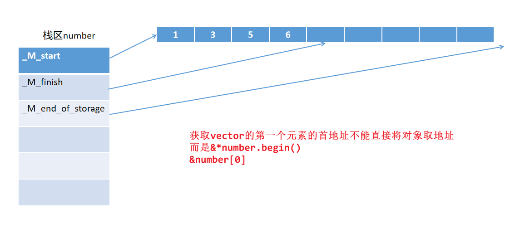
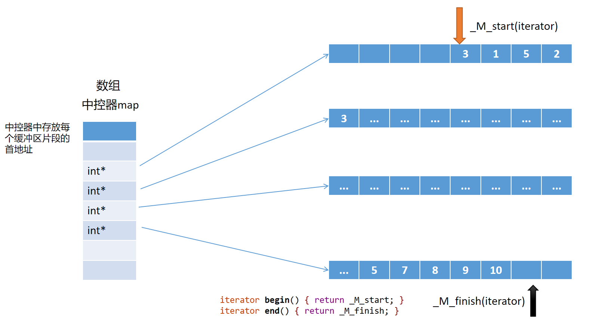
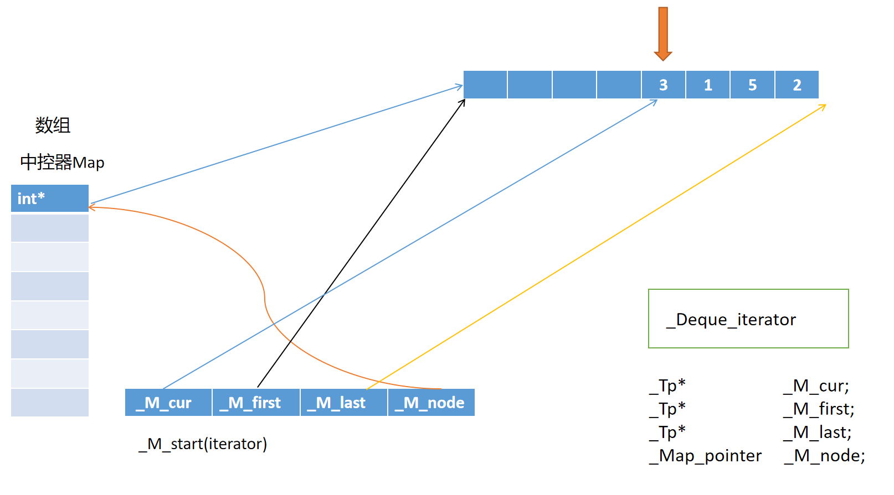
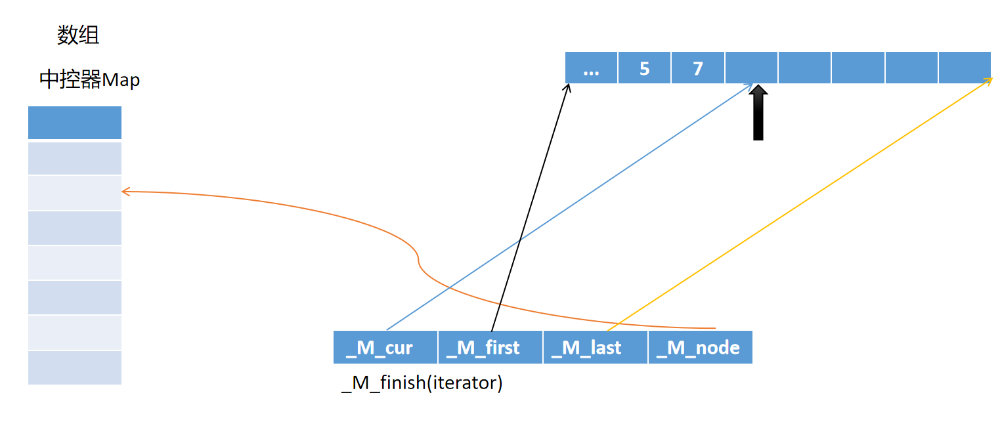

STL（Standard Template Library）是C++中的标准模板库组件，由容器、迭代器、算法、适配器、函数对象和空间配置器组成。
容器用于存储和管理数据对象,也就是数据结构。容器分为序列式容器、有序关联式容器和无序关联式容器。序列式容器中元素的顺序由插入的位置决定，主要有vector, deque和list等。有序关联式容器会对插入的元素进行排序，默认为升序，主要有set，map等。无序关联式容器基于哈希表，提供快速查找的功能，但是元素为乱序，主要有unordered_set和unordered_map。
迭代器是连接容器和算法的桥梁，是为了便于访问容器中的元素而设计出来的一种统一的访问接口，可以将其看成是一种指针，称为泛型指针。
算法提供一些通用的函数，用于操作容器中的元素，比如查找元素、排序元素和进行数值运算。
适配器用于修改其他组件的接口，起到适配的作用，比如容器适配器、迭代器适配器和函数适配器。
函数对象是重载了operator()的类，可以像函数一样调用，用于做定制化的操作。
空间配置器负责内存的分配和释放，为容器提供内存管理。
std::vector 是C++ STL中最常用的序列容器，提供动态数组功能。它是一个模板类，可以存储任意类型的元素。
动态大小：运行时可以改变大小
连续内存：元素在内存中连续存储
随机访问：支持O(1)时间复杂度的随机访问
自动内存管理：自动处理内存分配和释放
xxxxxxxxxx21using namespace std; // 或使用 std::vectorxxxxxxxxxx241// 空vector2std::vector<int> vec1;3
4// 指定大小5std::vector<int> vec2(10); // 10个元素，默认值为06std::vector<int> vec3(10, 5); // 10个元素，每个值为57
8// 初始化列表（C++11）9std::vector<int> vec4 = {1, 2, 3, 4, 5};10std::vector<int> vec5{1, 2, 3, 4, 5};11
12// 拷贝构造13std::vector<int> vec6(vec4);14std::vector<int> vec7 = vec4;15
16// 移动构造（C++11）17std::vector<int> vec8 = std::move(vec4);18
19// 从数组初始化20int arr[] = {1, 2, 3, 4, 5};21std::vector<int> vec9(arr, arr + 5);22
23// 从其他容器初始化24std::vector<int> vec10(vec4.begin(), vec4.end());xxxxxxxxxx131// 二维vector2std::vector<std::vector<int>> matrix;3
4// 指定大小的二维vector5std::vector<std::vector<int>> matrix2(3, std::vector<int>(4, 0));6// 3行4列，每个元素初始化为07
8// 初始化列表9std::vector<std::vector<int>> matrix3 = {10 {1, 2, 3},11 {4, 5, 6},12 {7, 8, 9}13};xxxxxxxxxx211std::vector<int> vec = {1, 2, 3, 4, 5};2
3// 下标访问（不检查边界）4int val1 = vec[0]; // 第一个元素5int val2 = vec[4]; // 最后一个元素6vec[0] = 10; // 修改元素7
8// at()访问（检查边界，抛出异常）9int val3 = vec.at(0);10try {11 int val4 = vec.at(10); // 越界，抛出std::out_of_range12} catch(const std::out_of_range& e) {13 std::cout << "Index out of range: " << e.what() << std::endl;14}15
16// 首尾元素访问17int first = vec.front(); // 第一个元素18int last = vec.back(); // 最后一个元素19
20// 获取底层数组指针21int* ptr = vec.data(); // C++11xxxxxxxxxx141std::vector<int> vec = {1, 2, 3, 4, 5};2
3// 大小相关4size_t size = vec.size(); // 当前元素个数5size_t capacity = vec.capacity(); // 当前容量6size_t max_size = vec.max_size(); // 理论最大容量7bool empty = vec.empty(); // 是否为空8
9// 容量管理10vec.reserve(100); // 预留容量，避免频繁重新分配11vec.shrink_to_fit(); // 释放多余容量（C++11）12
13std::cout << "Size: " << vec.size() << std::endl;14std::cout << "Capacity: " << vec.capacity() << std::endl;xxxxxxxxxx171std::vector<int> vec;2
3// 尾部添加4vec.push_back(1); // 添加单个元素5vec.emplace_back(2); // 就地构造（C++11）6
7// 插入元素8vec.insert(vec.begin(), 0); // 在开头插入09vec.insert(vec.begin() + 1, 5, 10); // 在位置1插入5个1010vec.insert(vec.end(), {7, 8, 9}); // 在末尾插入初始化列表11
12// 从其他容器插入13std::vector<int> other = {20, 21, 22};14vec.insert(vec.end(), other.begin(), other.end());15
16// emplace插入（C++11）17vec.emplace(vec.begin() + 2, 15); // 在位置2就地构造元素15xxxxxxxxxx141std::vector<int> vec = {1, 2, 3, 4, 5, 3, 6};2
3// 删除尾部元素4vec.pop_back();5
6// 删除指定位置元素7vec.erase(vec.begin()); // 删除第一个元素8vec.erase(vec.begin() + 1, vec.begin() + 3); // 删除范围[1,3)9
10// 删除所有等于某值的元素11vec.erase(std::remove(vec.begin(), vec.end(), 3), vec.end());12
13// 清空所有元素14vec.clear();xxxxxxxxxx131std::vector<int> vec = {1, 2, 3};2
3// 调整大小4vec.resize(5); // 扩大到5个元素，新元素默认初始化5vec.resize(7, 10); // 扩大到7个元素，新元素初始化为106vec.resize(3); // 缩小到3个元素7
8// 赋值操作9vec.assign(5, 100); // 赋值为5个10010vec.assign({1, 2, 3, 4}); // 赋值为初始化列表11
12std::vector<int> other = {10, 20, 30};13vec.assign(other.begin(), other.end()); // 从其他容器赋值xxxxxxxxxx131std::vector<int> vec = {1, 2, 3, 4, 5};2
3// 正向迭代器4std::vector<int>::iterator it = vec.begin();5std::vector<int>::const_iterator cit = vec.cbegin();6
7// 反向迭代器8std::vector<int>::reverse_iterator rit = vec.rbegin();9std::vector<int>::const_reverse_iterator crit = vec.crbegin();10
11// auto关键字（C++11）12auto it2 = vec.begin();13auto cit2 = vec.cbegin();xxxxxxxxxx221std::vector<int> vec = {1, 2, 3, 4, 5};2
3// 传统for循环4for(auto it = vec.begin(); it != vec.end(); ++it) {5 std::cout << *it << " ";6 *it *= 2; // 修改元素7}8
9// 范围for循环（C++11）10for(const auto& element : vec) {11 std::cout << element << " ";12}13
14// 修改版本15for(auto& element : vec) {16 element *= 2;17}18
19// 反向遍历20for(auto rit = vec.rbegin(); rit != vec.rend(); ++rit) {21 std::cout << *rit << " ";22}xxxxxxxxxx331
4std::vector<int> vec = {5, 2, 8, 1, 9, 3};5
6// 排序7std::sort(vec.begin(), vec.end()); // 升序8std::sort(vec.begin(), vec.end(), std::greater<int>()); // 降序9
10// 查找11auto it = std::find(vec.begin(), vec.end(), 5);12if(it != vec.end()) {13 std::cout << "Found at position: " << it - vec.begin() << std::endl;14}15
16// 计数17int count = std::count(vec.begin(), vec.end(), 5);18
19// 累加20int sum = std::accumulate(vec.begin(), vec.end(), 0);21
22// 变换23std::transform(vec.begin(), vec.end(), vec.begin(), 24 [](int x) { return x * 2; });25
26// 过滤（移除）27vec.erase(std::remove_if(vec.begin(), vec.end(), 28 [](int x) { return x % 2 == 0; }), 29 vec.end());30
31// 二分查找（需要先排序）32std::sort(vec.begin(), vec.end());33bool found = std::binary_search(vec.begin(), vec.end(), 5);xxxxxxxxxx131// vector的典型实现包含三个指针2template<typename T>3class vector {4private:5 T* start; // 指向第一个元素6 T* finish; // 指向最后一个元素的下一位置7 T* end_of_storage; // 指向分配内存的末尾8 9public:10 size_t size() const { return finish - start; }11 size_t capacity() const { return end_of_storage - start; }12 bool empty() const { return start == finish; }13};
xxxxxxxxxx181// 扩容示例2void demonstrate_capacity() {3 std::vector<int> vec;4 5 for(int i = 0; i < 20; ++i) {6 vec.push_back(i);7 std::cout << "Size: " << vec.size() 8 << ", Capacity: " << vec.capacity() << std::endl;9 }10 11 // 输出可能类似：12 // Size: 1, Capacity: 113 // Size: 2, Capacity: 214 // Size: 3, Capacity: 415 // Size: 4, Capacity: 416 // Size: 5, Capacity: 817 // ...18}扩容策略
增长因子：通常为1.5或2
重新分配：当容量不足时，分配新的更大内存块
元素移动：将旧元素移动到新内存位置
释放旧内存：释放原来的内存块
| 操作 | 时间复杂度 | 说明 |
|---|---|---|
| 随机访问 | O(1) | 通过下标或迭代器 |
| 尾部插入/删除 | O(1) 摊销 | push_back/pop_back |
| 任意位置插入/删除 | O(n) | 需要移动元素 |
| 查找 | O(n) | 线性查找 |
| 排序 | O(n log n) | 使用std::sort |
xxxxxxxxxx541// 读取不定数量的输入2std::vector<int> read_numbers() {3 std::vector<int> numbers;4 int num;5 6 while(std::cin >> num) {7 numbers.push_back(num);8 }9 10 return numbers;11}12
13// 矩阵运算14class Matrix {15private:16 std::vector<std::vector<double>> data;17 size_t rows, cols;18 19public:20 Matrix(size_t r, size_t c) : rows(r), cols(c) {21 data.resize(rows, std::vector<double>(cols, 0.0));22 }23 24 double& operator()(size_t i, size_t j) {25 return data[i][j];26 }27 28 const double& operator()(size_t i, size_t j) const {29 return data[i][j];30 }31};32
33// 缓存系统34template<typename T>35class Cache {36private:37 std::vector<T> buffer;38 size_t capacity;39 size_t current_size;40 41public:42 Cache(size_t cap) : capacity(cap), current_size(0) {43 buffer.reserve(capacity);44 }45 46 void add(const T& item) {47 if(current_size < capacity) {48 buffer.push_back(item);49 ++current_size;50 } else {51 // 实现LRU或其他替换策略52 }53 }54};选择vector的场景：
需要随机访问元素
主要在尾部进行插入/删除操作
需要连续内存布局
元素数量动态变化
避免使用vector的场景：
频繁在中间或开头插入/删除
需要稳定的迭代器和引用
对内存使用有严格限制
std::deque（double-ended queue，双端队列）是C++ STL中的一个序列容器，支持在两端进行高效的插入和删除操作。
双端操作：在头部和尾部都能进行O(1)的插入和删除
随机访问：支持O(1)时间复杂度的随机访问
动态大小：运行时可以改变大小
分段连续：内部使用分段的连续内存块
稳定的迭代器：中间插入/删除不会使两端的迭代器失效
xxxxxxxxxx21using namespace std; // 或使用 std::dequexxxxxxxxxx251// 空deque2std::deque<int> dq1;3
4// 指定大小5std::deque<int> dq2(10); // 10个元素，默认值为06std::deque<int> dq3(10, 5); // 10个元素，每个值为57
8// 初始化列表（C++11）9std::deque<int> dq4 = {1, 2, 3, 4, 5};10std::deque<int> dq5{1, 2, 3, 4, 5};11
12// 拷贝构造13std::deque<int> dq6(dq4);14std::deque<int> dq7 = dq4;15
16// 移动构造（C++11）17std::deque<int> dq8 = std::move(dq4);18
19// 从数组初始化20int arr[] = {1, 2, 3, 4, 5};21std::deque<int> dq9(arr, arr + 5);22
23// 从其他容器初始化24std::vector<int> vec = {1, 2, 3, 4, 5};25std::deque<int> dq10(vec.begin(), vec.end());xxxxxxxxxx181std::deque<int> dq = {1, 2, 3, 4, 5};2
3// 下标访问（不检查边界）4int val1 = dq[0]; // 第一个元素5int val2 = dq[4]; // 最后一个元素6dq[0] = 10; // 修改元素7
8// at()访问（检查边界，抛出异常）9int val3 = dq.at(0);10try {11 int val4 = dq.at(10); // 越界，抛出std::out_of_range12} catch(const std::out_of_range& e) {13 std::cout << "Index out of range: " << e.what() << std::endl;14}15
16// 首尾元素访问17int first = dq.front(); // 第一个元素18int last = dq.back(); // 最后一个元素xxxxxxxxxx91std::deque<int> dq = {1, 2, 3, 4, 5};2
3// 大小相关4size_t size = dq.size(); // 当前元素个数5size_t max_size = dq.max_size(); // 理论最大容量6bool empty = dq.empty(); // 是否为空7
8std::cout << "Size: " << dq.size() << std::endl;9std::cout << "Empty: " << (dq.empty() ? "Yes" : "No") << std::endl;双端插入和删除
xxxxxxxxxx171std::deque<int> dq;2
3// 尾部操作4dq.push_back(1); // 尾部添加5dq.push_back(2);6dq.emplace_back(3); // 就地构造（C++11）7std::cout << dq.back() << std::endl; // 访问尾部元素8dq.pop_back(); // 删除尾部元素9
10// 头部操作11dq.push_front(0); // 头部添加12dq.push_front(-1);13dq.emplace_front(-2); // 就地构造（C++11）14std::cout << dq.front() << std::endl; // 访问头部元素15dq.pop_front(); // 删除头部元素16
17// 结果：dq = {-1, 0, 1, 2}任意位置插入和删除
xxxxxxxxxx201std::deque<int> dq = {1, 2, 3, 4, 5};2
3// 插入元素4dq.insert(dq.begin(), 0); // 在开头插入05dq.insert(dq.begin() + 2, 5, 10); // 在位置2插入5个106dq.insert(dq.end(), {7, 8, 9}); // 在末尾插入初始化列表7
8// 从其他容器插入9std::vector<int> other = {20, 21, 22};10dq.insert(dq.end(), other.begin(), other.end());11
12// emplace插入（C++11）13dq.emplace(dq.begin() + 2, 15); // 在位置2就地构造元素1514
15// 删除元素16dq.erase(dq.begin()); // 删除第一个元素17dq.erase(dq.begin() + 1, dq.begin() + 3); // 删除范围[1,3)18
19// 清空所有元素20dq.clear();调整大小和赋值
xxxxxxxxxx131std::deque<int> dq = {1, 2, 3};2
3// 调整大小4dq.resize(5); // 扩大到5个元素，新元素默认初始化5dq.resize(7, 10); // 扩大到7个元素，新元素初始化为106dq.resize(3); // 缩小到3个元素7
8// 赋值操作9dq.assign(5, 100); // 赋值为5个10010dq.assign({1, 2, 3, 4}); // 赋值为初始化列表11
12std::vector<int> vec = {10, 20, 30};13dq.assign(vec.begin(), vec.end()); // 从其他容器赋值xxxxxxxxxx131std::deque<int> dq = {1, 2, 3, 4, 5};2
3// 正向迭代器4std::deque<int>::iterator it = dq.begin();5std::deque<int>::const_iterator cit = dq.cbegin();6
7// 反向迭代器8std::deque<int>::reverse_iterator rit = dq.rbegin();9std::deque<int>::const_reverse_iterator crit = dq.crbegin();10
11// auto关键字（C++11）12auto it2 = dq.begin();13auto cit2 = dq.cbegin();xxxxxxxxxx221std::deque<int> dq = {1, 2, 3, 4, 5};2
3// 传统for循环4for(auto it = dq.begin(); it != dq.end(); ++it) {5 std::cout << *it << " ";6 *it *= 2; // 修改元素7}8
9// 范围for循环（C++11）10for(const auto& element : dq) {11 std::cout << element << " ";12}13
14// 修改版本15for(auto& element : dq) {16 element *= 2;17}18
19// 反向遍历20for(auto rit = dq.rbegin(); rit != dq.rend(); ++rit) {21 std::cout << *rit << " ";22}xxxxxxxxxx211// deque的典型实现结构2template<typename T>3class deque {4private:5 T** map; // 指向块指针数组的指针6 size_t map_size; // map数组的大小7 8 iterator start; // 指向第一个元素9 iterator finish; // 指向最后一个元素的下一位置10 11 static const size_t buffer_size = 512 / sizeof(T);12 13public:14 // 迭代器实现15 class iterator {16 T* cur; // 当前元素指针17 T* first; // 当前块的开始18 T* last; // 当前块的结束19 T** node; // 指向当前块的map节点20 };21};deque是由多个片段组成的，片段内部是连续的，但是片段之间不连续的，分散的，多个片段被一个称为中控器的结构控制（也称为map，但跟std::map不是一回事）。
所以说deque是在物理上是不连续的，但是逻辑上是连续的。
初始化deque时，根据元素的个数分配一些缓冲区片段
在缓冲区片段中存放实际的元素，这里以int型元素为例。通常情况下，在初始化时第一个元素会被放置在第一个缓冲区中相对靠前的位置（而非第一个缓冲区的首地址，这样方便在头部添加元素）。
前后相邻的两个元素在逻辑上是连续的，但是物理层面上可能并不是连续的。
同时还会生成一个数组中控器（map），存放每个缓冲区片段的首地址。（注意map中的元素是int*，而不是严格意义的数组指针，这一点从源码中可以进行理解）
通常情况下，第一个缓冲区片段的首地址被放在中控器map的居中位置。
deque初始化完成后，进行添加元素的操作：
如果在尾部添加元素value
找到最后一个存放着元素的缓冲区片段，在其中最后一个元素的后面添加元素value。
如果此时最后的缓冲区片段是满的，那么就再申请一个新的缓冲区片段，将要添加的元素value存放在新片段的首个位置。同时中控器也加上一个元素（新片段的首地址），让中控器与新片段联系起来。
如果此时中控器已经满了，还要添加内容，那么开辟新的更大的空间作为中控器，将原本中控器中记录的地址值复制到新的中控器，并将最后一个缓冲区片段的首地址加入。
如果是在deque的头部添加元素value
找到已经存储的第一个元素的位置，在它的前面存放新元素value。
经过若干次头部添加元素之后，如果第一个缓冲区片段满了，还要继续在头部添加元素，则新开辟一个缓冲区片段（作为第一个片段），将value存在这个片段中的最后一个位置。同时在中控器的相应位置存放新的缓冲片段的首地址。
如果一直往deque头部添加元素，中控器的前半部分已经满了，后半部分还没满，就将中控器中记录的地址全都后移，将这个第一个缓冲区的首地址存入中控器的第一个位置。如果中控器全都满了，那就再开辟新的更大的空间作为中控器。

Tip
每个缓冲区片段的大小是多大？
如果deque存放的元素类型的大小小于 512 字节。每个缓冲区片段的大小为 512 字节，512 除以元素类型的大小，就可以得到每个缓冲区片段能够存放的元素数量。 例如元素类型是 int，在 64 位系统中，sizeof(int)= 4 字节。那么 deque_buf_size(4) 的结果就是 512 / 4 = 128，即每个缓冲区片段可以存放 128 个 int 类型的元素。 这种设计的好处是，对于较小的元素类型，每个缓冲区可以存放较多的元素，减少了缓冲区的数量，从而降低了中控器（用于管理缓冲区的数组）的管理开销。
如果元素类型大小大于等于 512 字节，函数返回 1。这表示每个缓冲区片段只存放一个元素。 比如自定义类型A的对象作为deque的元素，单个元素的大小超过了 512 字节，那么 __deque_buf_size(sizeof(A)) 的结果就是 1，每个缓冲区片段只会存放一个 A类型的元素。
Note
deque的迭代器底层是和vector一样吗？
deque的迭代器比vector的迭代器复杂得多，vector<T>的迭代器实际是对T*的包装，但deque的迭代器实际应该视为对象，数据成员包含四个指针，并且进行了一系列的运算符重载，使得迭代器能够像指针一样被使用。


| 操作 | 时间复杂度 | 说明 |
|---|---|---|
| 随机访问 | O(1) | 通过下标或迭代器 |
| 头部插入/删除 | O(1) | push_front/pop_front |
| 尾部插入/删除 | O(1) | push_back/pop_back |
| 任意位置插入/删除 | O(n) | 需要移动元素 |
| 查找 | O(n) | 线性查找 |
| 需求 | 推荐容器 | 原因 |
|---|---|---|
| 频繁尾部操作 | vector | 最佳性能，连续内存 |
| 频繁双端操作 | deque | 双端O(1)操作 |
| 频繁中间插入删除 | list | 任意位置O(1)操作 |
| 需要随机访问 | vector/deque | 支持O(1)随机访问 |
| 内存使用敏感 | vector | 最少的内存开销 |
| 迭代器稳定性 | list | 插入删除不影响其他迭代器 |
xxxxxxxxxx321
4std::deque<int> dq = {5, 2, 8, 1, 9, 3};5
6// 排序7std::sort(dq.begin(), dq.end()); // 升序8std::sort(dq.begin(), dq.end(), std::greater<int>()); // 降序9
10// 查找11auto it = std::find(dq.begin(), dq.end(), 5);12if(it != dq.end()) {13 std::cout << "Found at position: " << it - dq.begin() << std::endl;14}15
16// 计数17int count = std::count(dq.begin(), dq.end(), 5);18
19// 累加20int sum = std::accumulate(dq.begin(), dq.end(), 0);21
22// 变换23std::transform(dq.begin(), dq.end(), dq.begin(), 24 [](int x) { return x * 2; });25
26// 过滤（移除）27dq.erase(std::remove_if(dq.begin(), dq.end(), 28 [](int x) { return x % 2 == 0; }), 29 dq.end());30
31// 旋转32std::rotate(dq.begin(), dq.begin() + 2, dq.end());xxxxxxxxxx261// 滑动窗口最大值2std::vector<int> maxSlidingWindow(std::vector<int>& nums, int k) {3 std::deque<int> dq; // 存储数组下标4 std::vector<int> result;5 6 for(int i = 0; i < nums.size(); ++i) {7 // 移除超出窗口的元素8 while(!dq.empty() && dq.front() <= i - k) {9 dq.pop_front();10 }11 12 // 移除比当前元素小的元素13 while(!dq.empty() && nums[dq.back()] <= nums[i]) {14 dq.pop_back();15 }16 17 dq.push_back(i);18 19 // 窗口形成后记录最大值20 if(i >= k - 1) {21 result.push_back(nums[dq.front()]);22 }23 }24 25 return result;26}xxxxxxxxxx541// 回文检查2bool isPalindrome(const std::string& str) {3 std::deque<char> dq;4 5 // 只添加字母和数字6 for(char c : str) {7 if(std::isalnum(c)) {8 dq.push_back(std::tolower(c));9 }10 }11 12 // 从两端比较13 while(dq.size() > 1) {14 if(dq.front() != dq.back()) {15 return false;16 }17 dq.pop_front();18 dq.pop_back();19 }20 21 return true;22}23
24// 工作窃取队列25template<typename T>26class WorkStealingQueue {27private:28 std::deque<T> queue;29 mutable std::mutex mtx;30 31public:32 void push(T item) {33 std::lock_guard<std::mutex> lock(mtx);34 queue.push_back(std::move(item));35 }36 37 bool pop(T& item) {38 std::lock_guard<std::mutex> lock(mtx);39 if(queue.empty()) return false;40 41 item = std::move(queue.back());42 queue.pop_back();43 return true;44 }45 46 bool steal(T& item) {47 std::lock_guard<std::mutex> lock(mtx);48 if(queue.empty()) return false;49 50 item = std::move(queue.front());51 queue.pop_front();52 return true;53 }54};xxxxxxxxxx481// LRU缓存（使用deque实现）2template<typename Key, typename Value>3class LRUCache {4private:5 struct CacheItem {6 Key key;7 Value value;8 CacheItem(const Key& k, const Value& v) : key(k), value(v) {}9 };10 11 std::deque<CacheItem> cache;12 std::unordered_map<Key, typename std::deque<CacheItem>::iterator> index;13 size_t capacity;14 15public:16 LRUCache(size_t cap) : capacity(cap) {}17 18 Value get(const Key& key) {19 auto it = index.find(key);20 if(it == index.end()) {21 throw std::runtime_error("Key not found");22 }23 24 // 移动到前面（最近使用）25 CacheItem item = *it->second;26 cache.erase(it->second);27 cache.push_front(item);28 index[key] = cache.begin();29 30 return item.value;31 }32 33 void put(const Key& key, const Value& value) {34 auto it = index.find(key);35 36 if(it != index.end()) {37 // 更新现有项38 cache.erase(it->second);39 } else if(cache.size() >= capacity) {40 // 移除最久未使用的项41 index.erase(cache.back().key);42 cache.pop_back();43 }44 45 cache.emplace_front(key, value);46 index[key] = cache.begin();47 }48};std::deque 是一个功能强大的容器，具有以下优势：
双端高效操作：头部和尾部插入删除都是O(1)
随机访问支持：支持O(1)的随机访问
内存效率：相比vector，不需要预留大量连续内存
迭代器稳定性：中间操作对两端迭代器影响较小
适用场景
需要频繁在两端进行插入删除操作
需要随机访问但不想预分配大量内存
实现队列、双端队列等数据结构
滑动窗口算法
工作窃取队列
注意事项
中间插入删除性能不如list
随机访问性能略逊于vector
内存布局不如vector紧凑
迭代器在某些操作后可能失效
选择deque的关键是：当需要双端操作的高效性，同时又需要随机访问能力时，deque是最佳选择。
std::list 是 C++ STL 中的双向链表容器，提供了高效的插入和删除操作。
双向遍历：支持前向和后向迭代
非连续存储：元素在内存中不连续存储
动态大小：可以在运行时动态增长和收缩
稳定的迭代器：插入和删除操作不会使其他位置的迭代器失效
O(1) 插入删除：在任意位置插入/删除元素的时间复杂度为常数
无随机访问：不支持下标访问，只能通过迭代器顺序访问
内存效率：只在需要时分配内存，无预分配开销
xxxxxxxxxx131
4// 基本声明5std::list<int> lst1; // 空链表6std::list<int> lst2(5); // 5个默认值元素7std::list<int> lst3(5, 10); // 5个值为10的元素8std::list<int> lst4{1, 2, 3, 4, 5}; // 初始化列表9std::list<int> lst5(lst4); // 拷贝构造10std::list<int> lst6(lst4.begin(), lst4.end()); // 迭代器范围构造11
12// 自定义类型13std::list<std::string> strList{"hello", "world", "list"};xxxxxxxxxx81std::list<int> lst{1, 2, 3, 4, 5};2
3// 访问首尾元素4int front = lst.front(); // 获取第一个元素：15int back = lst.back(); // 获取最后一个元素：56
7// 注意：list不支持随机访问，没有operator[]8// lst[2]; // 编译错误！xxxxxxxxxx51std::list<int> lst{1, 2, 3};2
3bool isEmpty = lst.empty(); // 检查是否为空4size_t size = lst.size(); // 获取元素个数：35// list没有capacity概念，因为是链表结构xxxxxxxxxx201std::list<int> lst;2
3// 前端添加4lst.push_front(1); // [1]5lst.push_front(0); // [0, 1]6
7// 后端添加8lst.push_back(2); // [0, 1, 2]9lst.push_back(3); // [0, 1, 2, 3]10
11// 就地构造12lst.emplace_front(-1); // [-1, 0, 1, 2, 3]13lst.emplace_back(4); // [-1, 0, 1, 2, 3, 4]14
15// 任意位置插入16auto it = lst.begin();17std::advance(it, 2); // 移动到第3个位置18lst.insert(it, 99); // [-1, 0, 99, 1, 2, 3, 4]19lst.insert(it, 3, 88); // 插入3个8820lst.insert(it, {77, 66}); // 插入初始化列表xxxxxxxxxx251std::list<int> lst{1, 2, 3, 2, 4, 2, 5};2
3// 删除首尾元素4lst.pop_front(); // 删除第一个元素5lst.pop_back(); // 删除最后一个元素6
7// 删除指定位置8auto it = lst.begin();9std::advance(it, 1);10lst.erase(it); // 删除第2个元素11
12// 删除范围13auto start = lst.begin();14auto end = lst.begin();15std::advance(end, 2);16lst.erase(start, end); // 删除前两个元素17
18// 删除特定值19lst.remove(2); // 删除所有值为2的元素20
21// 条件删除22lst.remove_if([](int x) { return x > 3; }); // 删除所有大于3的元素23
24// 清空25lst.clear(); // 删除所有元素xxxxxxxxxx131std::list<int> lst;2
3// 调整大小4lst.resize(5); // 调整为5个元素，新元素为默认值5lst.resize(8, 99); // 调整为8个元素，新元素为996lst.resize(3); // 缩小到3个元素7
8// 赋值操作9lst.assign(5, 10); // 赋值为5个1010lst.assign({1, 2, 3, 4}); // 赋值为初始化列表11
12std::list<int> other{7, 8, 9};13lst.assign(other.begin(), other.end()); // 赋值为其他容器的范围xxxxxxxxxx111std::list<int> lst{1, 2, 3, 4, 5};2
3// 双向迭代器4std::list<int>::iterator it = lst.begin();5std::list<int>::const_iterator cit = lst.cbegin();6std::list<int>::reverse_iterator rit = lst.rbegin();7std::list<int>::const_reverse_iterator crit = lst.crbegin();8
9// C++11 auto简化10auto it2 = lst.begin();11auto cit2 = lst.cbegin();xxxxxxxxxx231std::list<int> lst{1, 2, 3, 4, 5};2
3// 前向遍历4for (auto it = lst.begin(); it != lst.end(); ++it) {5 std::cout << *it << " ";6}7
8// 反向遍历9for (auto rit = lst.rbegin(); rit != lst.rend(); ++rit) {10 std::cout << *rit << " ";11}12
13// 范围for循环（推荐）14for (const auto& elem : lst) {15 std::cout << elem << " ";16}17
18// 迭代器移动19auto it = lst.begin();20++it; // 前进一步21--it; // 后退一步22std::advance(it, 3); // 前进3步23std::advance(it, -2); // 后退2步1. 拼接操作
xxxxxxxxxx151std::list<int> lst1{1, 2, 3};2std::list<int> lst2{4, 5, 6};3std::list<int> lst3{7, 8, 9};4
5// 拼接整个链表6lst1.splice(lst1.end(), lst2); // lst1: [1,2,3,4,5,6], lst2: []7
8// 拼接单个元素9auto it = lst3.begin();10lst1.splice(lst1.begin(), lst3, it); // 移动lst3的第一个元素到lst1开头11
12// 拼接范围13auto start = lst3.begin();14auto end = lst3.end();15lst1.splice(lst1.end(), lst3, start, end); // 移动lst3剩余元素到lst1末尾2. 排序和去重
xxxxxxxxxx151std::list<int> lst{3, 1, 4, 1, 5, 9, 2, 6};2
3// 排序4lst.sort(); // 升序排序：[1,1,2,3,4,5,6,9]5lst.sort(std::greater<int>()); // 降序排序6
7// 自定义比较器8lst.sort([](int a, int b) { return a > b; });9
10// 去重（需要先排序）11lst.sort();12lst.unique(); // 删除连续的重复元素13
14// 条件去重15lst.unique([](int a, int b) { return std::abs(a - b) < 2; });3. 合并操作
xxxxxxxxxx101std::list<int> lst1{1, 3, 5, 7};2std::list<int> lst2{2, 4, 6, 8};3
4// 合并已排序的链表5lst1.merge(lst2); // lst1: [1,2,3,4,5,6,7,8], lst2: []6
7// 自定义合并条件8std::list<int> lst3{8, 6, 4, 2};9std::list<int> lst4{7, 5, 3, 1};10lst3.merge(lst4, std::greater<int>()); // 降序合并4. 反转
xxxxxxxxxx21std::list<int> lst{1, 2, 3, 4, 5};2lst.reverse(); // [5, 4, 3, 2, 1]xxxxxxxxxx251
4std::list<int> lst{1, 2, 3, 4, 5};5
6// 查找7auto it = std::find(lst.begin(), lst.end(), 3);8if (it != lst.end()) {9 std::cout << "Found: " << *it << std::endl;10}11
12// 计数13int count = std::count(lst.begin(), lst.end(), 2);14
15// 累加16int sum = std::accumulate(lst.begin(), lst.end(), 0);17
18// 变换19std::list<int> result;20std::transform(lst.begin(), lst.end(), std::back_inserter(result),21 [](int x) { return x * 2; });22
23// 条件查找24auto it2 = std::find_if(lst.begin(), lst.end(),25 [](int x) { return x > 3; });xxxxxxxxxx91// 简化的list节点结构2template<typename T>3struct ListNode {4 T data;5 ListNode* prev;6 ListNode* next;7 8 ListNode(const T& value) : data(value), prev(nullptr), next(nullptr) {}9};非连续存储：每个节点独立分配内存
双向链接：每个节点包含指向前后节点的指针
哨兵节点：通常使用哨兵节点简化边界处理
内存开销：每个元素额外需要两个指针的空间
xxxxxxxxxx181// 简化的list迭代器2template<typename T>3class ListIterator {4 ListNode<T>* node;5public:6 ListIterator& operator++() {7 node = node->next;8 return *this;9 }10 11 ListIterator& operator--() {12 node = node->prev;13 return *this;14 }15 16 T& operator*() { return node->data; }17 // ... 其他操作18};| 操作 | 时间复杂度 | 说明 |
|---|---|---|
| 插入/删除（任意位置） | O(1) | 已知迭代器位置 |
| 查找 | O(n) | 需要线性搜索 |
| 访问首尾元素 | O(1) | 直接访问 |
| 排序 | O(n log n) | 归并排序 |
| 拼接 | O(1) | 指针操作 |
| 大小获取 | O(1) | 维护计数器 |
xxxxxxxxxx421
4template<typename K, typename V>5class LRUCache {6private:7 int capacity;8 std::list<std::pair<K, V>> cache;9 std::unordered_map<K, typename std::list<std::pair<K, V>>::iterator> map;10 11public:12 LRUCache(int cap) : capacity(cap) {}13 14 V get(const K& key) {15 auto it = map.find(key);16 if (it == map.end()) {17 return V{}; // 未找到18 }19 20 // 移动到前端21 cache.splice(cache.begin(), cache, it->second);22 return it->second->second;23 }24 25 void put(const K& key, const V& value) {26 auto it = map.find(key);27 if (it != map.end()) {28 // 更新现有键29 it->second->second = value;30 cache.splice(cache.begin(), cache, it->second);31 } else {32 // 添加新键33 if (cache.size() >= capacity) {34 // 删除最久未使用的35 map.erase(cache.back().first);36 cache.pop_back();37 }38 cache.emplace_front(key, value);39 map[key] = cache.begin();40 }41 }42};xxxxxxxxxx481class Playlist {2private:3 std::list<std::string> songs;4 std::list<std::string>::iterator current;5 6public:7 void addSong(const std::string& song) {8 songs.push_back(song);9 if (songs.size() == 1) {10 current = songs.begin();11 }12 }13 14 void removeSong(const std::string& song) {15 auto it = std::find(songs.begin(), songs.end(), song);16 if (it != songs.end()) {17 if (it == current) {18 ++current;19 if (current == songs.end()) {20 current = songs.begin();21 }22 }23 songs.erase(it);24 }25 }26 27 std::string nextSong() {28 if (!songs.empty()) {29 ++current;30 if (current == songs.end()) {31 current = songs.begin();32 }33 return *current;34 }35 return "";36 }37 38 std::string prevSong() {39 if (!songs.empty()) {40 if (current == songs.begin()) {41 current = songs.end();42 }43 --current;44 return *current;45 }46 return "";47 }48};xxxxxxxxxx411template<typename Command>2class UndoRedoManager {3private:4 std::list<Command> history;5 typename std::list<Command>::iterator current;6 7public:8 UndoRedoManager() {9 current = history.end();10 }11 12 void execute(const Command& cmd) {13 // 删除当前位置之后的所有命令14 history.erase(current, history.end());15 16 // 添加新命令17 history.push_back(cmd);18 current = history.end();19 20 // 执行命令21 cmd.execute();22 }23 24 bool undo() {25 if (current != history.begin()) {26 --current;27 current->undo();28 return true;29 }30 return false;31 }32 33 bool redo() {34 if (current != history.end()) {35 current->execute();36 ++current;37 return true;38 }39 return false;40 }41};优势
高效插入删除：任意位置O(1)时间复杂度
稳定迭代器：插入删除不影响其他迭代器
灵活拼接：高效的链表合并操作
内存效率：按需分配，无预分配浪费
劣势
无随机访问：不能通过下标直接访问元素
内存开销大：每个元素需要额外的指针空间
缓存不友好：非连续内存布局影响性能
遍历较慢：相比连续容器，遍历性能较差
适用场景
频繁的中间插入/删除操作
需要稳定的迭代器
实现LRU缓存、撤销重做等功能
不需要随机访问的序列操作
需要高效拼接的场景
std::list 是实现双向链表的标准容器，在需要频繁插入删除且不需要随机访问的场景下是最佳选择。
std::set 是 C++ STL 中的关联容器，基于红黑树实现，存储唯一的有序元素。
核心特征
唯一性：不允许重复元素
有序性：元素按照比较函数自动排序
关联性：元素本身就是键值
不可修改：元素一旦插入就不能直接修改
对数时间复杂度：查找、插入、删除都是 O(log n)
底层实现
红黑树：自平衡二叉搜索树
双向迭代器：支持前向和后向遍历
稳定的迭代器：插入删除不会使其他迭代器失效（除了被删除的元素）
xxxxxxxxxx261
5// 基本声明6std::set<int> s1; // 空集合7std::set<int> s2{3, 1, 4, 1, 5, 9}; // 初始化列表，重复元素会被忽略8std::set<int> s3(s2); // 拷贝构造9std::set<int> s4(s2.begin(), s2.end()); // 迭代器范围构造10
11// 自定义比较器12std::set<int, std::greater<int>> s5{1, 2, 3}; // 降序排列13
14// 字符串集合15std::set<std::string> strSet{"apple", "banana", "cherry"};16
17// 自定义类型18struct Person {19 std::string name;20 int age;21 22 bool operator<(const Person& other) const {23 return age < other.age; // 按年龄排序24 }25};26std::set<Person> personSet;插入操作
xxxxxxxxxx221std::set<int> s;2
3// 插入单个元素4auto result1 = s.insert(10); // 返回 pair<iterator, bool>5if (result1.second) {6 std::cout << "插入成功: " << *result1.first << std::endl;7}8
9// 插入多个元素10s.insert({20, 30, 40, 20}); // 重复的20只会插入一次11
12// 指定位置插入（提示位置，可能提高效率）13auto it = s.find(20);14s.insert(it, 25); // 在20附近插入2515
16// 范围插入17std::vector<int> vec{50, 60, 70};18s.insert(vec.begin(), vec.end());19
20// 就地构造21s.emplace(80); // 等价于insert(80)22s.emplace_hint(s.end(), 90); // 带提示的就地构造查找操作
xxxxxxxxxx251std::set<int> s{1, 2, 3, 4, 5};2
3// 查找元素4auto it = s.find(3);5if (it != s.end()) {6 std::cout << "找到: " << *it << std::endl;7}8
9// 计数（对于set总是0或1）10if (s.count(4) > 0) {11 std::cout << "4存在于集合中" << std::endl;12}13
14// C++20: contains方法15// if (s.contains(5)) {16// std::cout << "5存在于集合中" << std::endl;17// }18
19// 边界查找20auto lower = s.lower_bound(3); // 第一个不小于3的元素21auto upper = s.upper_bound(3); // 第一个大于3的元素22auto range = s.equal_range(3); // 等于3的元素范围23
24std::cout << "lower_bound(3): " << *lower << std::endl;25std::cout << "upper_bound(3): " << *upper << std::endl;删除操作
xxxxxxxxxx191std::set<int> s{1, 2, 3, 4, 5, 6, 7, 8, 9};2
3// 按值删除4size_t removed = s.erase(5); // 返回删除的元素个数5std::cout << "删除了 " << removed << " 个元素" << std::endl;6
7// 按迭代器删除8auto it = s.find(3);9if (it != s.end()) {10 s.erase(it); // 删除迭代器指向的元素11}12
13// 范围删除14auto start = s.find(6);15auto end = s.find(9);16s.erase(start, end); // 删除[6, 9)范围的元素17
18// 清空19s.clear(); // 删除所有元素大小和状态
xxxxxxxxxx81std::set<int> s{1, 2, 3};2
3bool isEmpty = s.empty(); // 检查是否为空4size_t size = s.size(); // 获取元素个数5size_t maxSize = s.max_size(); // 获取最大可能大小6
7std::cout << "大小: " << size << std::endl;8std::cout << "是否为空: " << (isEmpty ? "是" : "否") << std::endl;xxxxxxxxxx111std::set<int> s{5, 2, 8, 1, 9};2
3// 各种迭代器类型4std::set<int>::iterator it = s.begin();5std::set<int>::const_iterator cit = s.cbegin();6std::set<int>::reverse_iterator rit = s.rbegin();7std::set<int>::const_reverse_iterator crit = s.crbegin();8
9// C++11 auto简化10auto it2 = s.begin();11auto cit2 = s.cbegin();xxxxxxxxxx221std::set<int> s{5, 2, 8, 1, 9};2
3// 正向遍历（自动有序）4std::cout << "正向遍历: ";5for (auto it = s.begin(); it != s.end(); ++it) {6 std::cout << *it << " "; // 输出: 1 2 5 8 97}8std::cout << std::endl;9
10// 反向遍历11std::cout << "反向遍历: ";12for (auto rit = s.rbegin(); rit != s.rend(); ++rit) {13 std::cout << *rit << " "; // 输出: 9 8 5 2 114}15std::cout << std::endl;16
17// 范围for循环（推荐）18std::cout << "范围for: ";19for (const auto& elem : s) {20 std::cout << elem << " ";21}22std::cout << std::endl;1. 函数对象比较器
xxxxxxxxxx221// 降序比较器2struct DescendingCompare {3 bool operator()(int a, int b) const {4 return a > b; // 降序5 }6};7
8std::set<int, DescendingCompare> descSet{3, 1, 4, 1, 5};9// 结果: {5, 4, 3, 1}10
11// 字符串长度比较器12struct StringLengthCompare {13 bool operator()(const std::string& a, const std::string& b) const {14 if (a.length() != b.length()) {15 return a.length() < b.length();16 }17 return a < b; // 长度相同时按字典序18 }19};20
21std::set<std::string, StringLengthCompare> strSet{"apple", "hi", "banana", "a"};22// 结果: {"a", "hi", "apple", "banana"}2. Lambda表达式比较器
xxxxxxxxxx211// 使用lambda作为比较器2auto cmp = [](int a, int b) { return a > b; };3std::set<int, decltype(cmp)> lambdaSet(cmp);4lambdaSet.insert({1, 3, 2, 5, 4});5// 结果: {5, 4, 3, 2, 1}6
7// 复杂对象的lambda比较器8struct Point {9 int x, y;10 Point(int x, int y) : x(x), y(y) {}11};12
13auto pointCmp = [](const Point& a, const Point& b) {14 if (a.x != b.x) return a.x < b.x;15 return a.y < b.y;16};17
18std::set<Point, decltype(pointCmp)> pointSet(pointCmp);19pointSet.emplace(1, 2);20pointSet.emplace(1, 1);21pointSet.emplace(2, 1);3. 函数指针比较器
xxxxxxxxxx71// 函数指针比较器2bool descendingCompare(int a, int b) {3 return a > b;4}5
6std::set<int, bool(*)(int, int)> funcPtrSet(descendingCompare);7funcPtrSet.insert({1, 3, 2, 5, 4});1. 使用STL算法进行集合运算
xxxxxxxxxx351
3std::set<int> set1{1, 2, 3, 4, 5};4std::set<int> set2{3, 4, 5, 6, 7};5std::set<int> result;6
7// 并集8std::set_union(set1.begin(), set1.end(),9 set2.begin(), set2.end(),10 std::inserter(result, result.begin()));11// result: {1, 2, 3, 4, 5, 6, 7}12
13result.clear();14
15// 交集16std::set_intersection(set1.begin(), set1.end(),17 set2.begin(), set2.end(),18 std::inserter(result, result.begin()));19// result: {3, 4, 5}20
21result.clear();22
23// 差集（set1 - set2）24std::set_difference(set1.begin(), set1.end(),25 set2.begin(), set2.end(),26 std::inserter(result, result.begin()));27// result: {1, 2}28
29result.clear();30
31// 对称差集（并集 - 交集）32std::set_symmetric_difference(set1.begin(), set1.end(),33 set2.begin(), set2.end(),34 std::inserter(result, result.begin()));35// result: {1, 2, 6, 7}2. 自定义集合运算函数
xxxxxxxxxx291template<typename T>2std::set<T> setUnion(const std::set<T>& s1, const std::set<T>& s2) {3 std::set<T> result = s1;4 result.insert(s2.begin(), s2.end());5 return result;6}7
8template<typename T>9std::set<T> setIntersection(const std::set<T>& s1, const std::set<T>& s2) {10 std::set<T> result;11 std::set_intersection(s1.begin(), s1.end(),12 s2.begin(), s2.end(),13 std::inserter(result, result.begin()));14 return result;15}16
17template<typename T>18bool isSubset(const std::set<T>& subset, const std::set<T>& superset) {19 return std::includes(superset.begin(), superset.end(),20 subset.begin(), subset.end());21}22
23// 使用示例24std::set<int> s1{1, 2, 3};25std::set<int> s2{2, 3, 4};26
27auto unionSet = setUnion(s1, s2); // {1, 2, 3, 4}28auto intersectionSet = setIntersection(s1, s2); // {2, 3}29bool isS1SubsetOfS2 = isSubset(s1, s2); // falsexxxxxxxxxx391
4std::set<int> s{1, 2, 3, 4, 5, 6, 7, 8, 9, 10};5
6// 查找算法7auto it = std::find(s.begin(), s.end(), 5);8if (it != s.end()) {9 std::cout << "找到: " << *it << std::endl;10}11
12// 条件查找13auto evenIt = std::find_if(s.begin(), s.end(),14 [](int x) { return x % 2 == 0; });15if (evenIt != s.end()) {16 std::cout << "第一个偶数: " << *evenIt << std::endl;17}18
19// 计数算法20int evenCount = std::count_if(s.begin(), s.end(),21 [](int x) { return x % 2 == 0; });22std::cout << "偶数个数: " << evenCount << std::endl;23
24// 累加算法25int sum = std::accumulate(s.begin(), s.end(), 0);26std::cout << "元素总和: " << sum << std::endl;27
28// 变换算法（注意：不能直接修改set元素）29std::vector<int> doubled;30std::transform(s.begin(), s.end(), std::back_inserter(doubled),31 [](int x) { return x * 2; });32
33// 检查算法34bool allPositive = std::all_of(s.begin(), s.end(),35 [](int x) { return x > 0; });36bool anyEven = std::any_of(s.begin(), s.end(),37 [](int x) { return x % 2 == 0; });38bool noneNegative = std::none_of(s.begin(), s.end(),39 [](int x) { return x < 0; });1. 红黑树结构
xxxxxxxxxx131// 简化的红黑树节点结构2template<typename T>3struct RBTreeNode {4 T data;5 RBTreeNode* parent;6 RBTreeNode* left;7 RBTreeNode* right;8 bool isRed; // 红黑树颜色9 10 RBTreeNode(const T& value) 11 : data(value), parent(nullptr), left(nullptr), 12 right(nullptr), isRed(true) {}13};2. 红黑树性质
节点颜色：每个节点要么是红色，要么是黑色
根节点：根节点是黑色
叶节点：所有叶节点（NIL）都是黑色
红色节点：红色节点的子节点必须是黑色
黑色高度：从任一节点到其叶节点的所有路径包含相同数量的黑色节点
| 操作 | 平均时间复杂度 | 最坏时间复杂度 |
|---|---|---|
| 查找 | O(log n) | O(log n) |
| 插入 | O(log n) | O(log n) |
| 删除 | O(log n) | O(log n) |
| 遍历 | O(n) | O(n) |
xxxxxxxxxx121// 从向量中去除重复元素并排序2std::vector<int> vec{3, 1, 4, 1, 5, 9, 2, 6, 5};3std::set<int> uniqueSet(vec.begin(), vec.end());4vec.assign(uniqueSet.begin(), uniqueSet.end());5// vec现在是: {1, 2, 3, 4, 5, 6, 9}6
7// 函数形式8template<typename T>9std::vector<T> removeDuplicatesAndSort(const std::vector<T>& input) {10 std::set<T> uniqueSet(input.begin(), input.end());11 return std::vector<T>(uniqueSet.begin(), uniqueSet.end());12}xxxxxxxxxx431
4class TextAnalyzer {5private:6 std::map<std::string, int> wordCount;7 std::set<std::string> uniqueWords;8 9public:10 void addText(const std::string& text) {11 std::istringstream iss(text);12 std::string word;13 14 while (iss >> word) {15 // 简单的单词清理16 word.erase(std::remove_if(word.begin(), word.end(),17 [](char c) { return !std::isalnum(c); }),18 word.end());19 20 if (!word.empty()) {21 std::transform(word.begin(), word.end(), word.begin(), ::tolower);22 wordCount[word]++;23 uniqueWords.insert(word);24 }25 }26 }27 28 std::set<std::string> getUniqueWords() const {29 return uniqueWords;30 }31 32 int getWordCount(const std::string& word) const {33 auto it = wordCount.find(word);34 return (it != wordCount.end()) ? it->second : 0;35 }36 37 void printStatistics() const {38 std::cout << "总共有 " << uniqueWords.size() << " 个不同的单词:" << std::endl;39 for (const auto& word : uniqueWords) {40 std::cout << word << ": " << wordCount.at(word) << std::endl;41 }42 }43};xxxxxxxxxx451class PermissionManager {2private:3 std::map<std::string, std::set<std::string>> userPermissions;4 std::set<std::string> allPermissions;5 6public:7 void addPermission(const std::string& permission) {8 allPermissions.insert(permission);9 }10 11 void grantPermission(const std::string& user, const std::string& permission) {12 if (allPermissions.count(permission)) {13 userPermissions[user].insert(permission);14 }15 }16 17 void revokePermission(const std::string& user, const std::string& permission) {18 userPermissions[user].erase(permission);19 }20 21 bool hasPermission(const std::string& user, const std::string& permission) const {22 auto it = userPermissions.find(user);23 if (it != userPermissions.end()) {24 return it->second.count(permission) > 0;25 }26 return false;27 }28 29 std::set<std::string> getUserPermissions(const std::string& user) const {30 auto it = userPermissions.find(user);31 return (it != userPermissions.end()) ? it->second : std::set<std::string>();32 }33 34 std::set<std::string> getCommonPermissions(const std::string& user1, 35 const std::string& user2) const {36 auto perms1 = getUserPermissions(user1);37 auto perms2 = getUserPermissions(user2);38 std::set<std::string> common;39 40 std::set_intersection(perms1.begin(), perms1.end(),41 perms2.begin(), perms2.end(),42 std::inserter(common, common.begin()));43 return common;44 }45};xxxxxxxxxx441class Graph {2private:3 std::map<int, std::set<int>> adjacencyList;4 5public:6 void addVertex(int vertex) {7 adjacencyList[vertex]; // 创建空的邻接集合8 }9 10 void addEdge(int from, int to) {11 adjacencyList[from].insert(to);12 adjacencyList[to].insert(from); // 无向图13 }14 15 void removeEdge(int from, int to) {16 adjacencyList[from].erase(to);17 adjacencyList[to].erase(from);18 }19 20 bool hasEdge(int from, int to) const {21 auto it = adjacencyList.find(from);22 if (it != adjacencyList.end()) {23 return it->second.count(to) > 0;24 }25 return false;26 }27 28 std::set<int> getNeighbors(int vertex) const {29 auto it = adjacencyList.find(vertex);30 return (it != adjacencyList.end()) ? it->second : std::set<int>();31 }32 33 int getDegree(int vertex) const {34 return getNeighbors(vertex).size();35 }36 37 std::set<int> getAllVertices() const {38 std::set<int> vertices;39 for (const auto& pair : adjacencyList) {40 vertices.insert(pair.first);41 }42 return vertices;43 }44};xxxxxxxxxx571
3struct Interval {4 int start, end;5 6 Interval(int s, int e) : start(s), end(e) {}7 8 bool operator<(const Interval& other) const {9 return start < other.start;10 }11 12 bool overlaps(const Interval& other) const {13 return !(end < other.start || other.end < start);14 }15 16 Interval merge(const Interval& other) const {17 return Interval(std::min(start, other.start), 18 std::max(end, other.end));19 }20};21
22class IntervalSet {23private:24 std::set<Interval> intervals;25 26public:27 void addInterval(const Interval& newInterval) {28 auto it = intervals.lower_bound(newInterval);29 30 // 向前查找重叠的区间31 while (it != intervals.begin()) {32 auto prev = std::prev(it);33 if (prev->overlaps(newInterval)) {34 it = prev;35 } else {36 break;37 }38 }39 40 // 合并所有重叠的区间41 Interval merged = newInterval;42 while (it != intervals.end() && it->overlaps(merged)) {43 merged = merged.merge(*it);44 it = intervals.erase(it);45 }46 47 intervals.insert(merged);48 }49 50 void printIntervals() const {51 for (const auto& interval : intervals) {52 std::cout << "[" << interval.start << ", " 53 << interval.end << "] ";54 }55 std::cout << std::endl;56 }57};优势
自动排序：元素始终保持有序状态
唯一性保证：自动去重，避免重复元素
对数时间复杂度：查找、插入、删除都是O(log n)
稳定的迭代器：插入删除不会使其他迭代器失效
丰富的查找功能：支持范围查找、边界查找
集合运算支持：配合STL算法进行集合运算
劣势
内存开销大：每个节点需要额外的指针和颜色信息
无随机访问：不能通过下标直接访问元素
插入性能：比哈希表慢，比vector的尾部插入慢
缓存不友好：非连续内存布局影响性能
元素不可修改：插入后不能直接修改元素值
适用场景
需要自动排序的唯一元素集合
频繁的查找、插入、删除操作
需要进行集合运算（并集、交集、差集）
需要范围查询功能
实现索引、去重、权限管理等功能
对元素顺序有要求的场景
std::set 是实现有序唯一集合的理想选择，在需要自动排序和去重的场景下表现优异。
std::map 是 C++ STL 中的关联容器，基于红黑树实现，存储键值对并按键自动排序。
1. 核心特征
键值对存储：存储 std::pair<const Key, Value> 类型的元素
唯一键：每个键只能出现一次
自动排序：按键的比较函数自动排序
关联性：通过键快速访问对应的值
对数时间复杂度：查找、插入、删除都是 O(log n)
2. 底层实现
红黑树：自平衡二叉搜索树
双向迭代器：支持前向和后向遍历
稳定的迭代器：插入删除不会使其他迭代器失效（除了被删除的元素）
xxxxxxxxxx271
5// 基本声明6std::map<int, std::string> m1; // 空映射7std::map<int, std::string> m2{{1, "one"}, {2, "two"}, {3, "three"}}; // 初始化列表8std::map<int, std::string> m3(m2); // 拷贝构造9std::map<int, std::string> m4(m2.begin(), m2.end()); // 迭代器范围构造10
11// 自定义比较器12std::map<int, std::string, std::greater<int>> m5; // 降序排列13
14// 字符串键的映射15std::map<std::string, int> wordCount;16
17// 自定义类型作为键18struct Person {19 std::string name;20 int age;21 22 bool operator<(const Person& other) const {23 if (name != other.name) return name < other.name;24 return age < other.age;25 }26};27std::map<Person, std::string> personInfo;1. 插入操作
xxxxxxxxxx341std::map<int, std::string> m;2
3// 使用下标操作符插入/修改4m[1] = "one"; // 插入新元素5m[1] = "ONE"; // 修改现有元素6
7// 使用insert插入8auto result1 = m.insert({2, "two"}); // 返回 pair<iterator, bool>9if (result1.second) {10 std::cout << "插入成功: " << result1.first->second << std::endl;11}12
13// 使用insert插入pair14auto result2 = m.insert(std::make_pair(3, "three"));15
16// 指定位置插入（提示位置）17auto it = m.find(2);18m.insert(it, {4, "four"}); // 在2附近插入419
20// 范围插入21std::map<int, std::string> other{{5, "five"}, {6, "six"}};22m.insert(other.begin(), other.end());23
24// 就地构造25m.emplace(7, "seven"); // 直接构造pair26m.emplace_hint(m.end(), 8, "eight"); // 带提示的就地构造27
28// try_emplace (C++17)29m.try_emplace(9, "nine"); // 只在键不存在时插入30m.try_emplace(9, "NINE"); // 键已存在，不会插入31
32// insert_or_assign (C++17)33m.insert_or_assign(10, "ten"); // 插入或赋值34m.insert_or_assign(10, "TEN"); // 键已存在，会更新值2. 访问操作
xxxxxxxxxx341std::map<int, std::string> m{{1, "one"}, {2, "two"}, {3, "three"}};2
3// 下标访问4std::string value1 = m[1]; // 获取键1对应的值5m[4] = "four"; // 如果键不存在，会插入新元素6
7// at方法（安全访问）8try {9 std::string value2 = m.at(2); // 安全访问，键不存在会抛异常10 std::string value3 = m.at(10); // 抛出 std::out_of_range11} catch (const std::out_of_range& e) {12 std::cout << "键不存在: " << e.what() << std::endl;13}14
15// 查找16auto it = m.find(3);17if (it != m.end()) {18 std::cout << "找到: " << it->first << " -> " << it->second << std::endl;19}20
21// 计数（对于map总是0或1）22if (m.count(2) > 0) {23 std::cout << "键2存在" << std::endl;24}25
26// C++20: contains方法27// if (m.contains(3)) {28// std::cout << "键3存在" << std::endl;29// }30
31// 边界查找32auto lower = m.lower_bound(2); // 第一个不小于2的元素33auto upper = m.upper_bound(2); // 第一个大于2的元素34auto range = m.equal_range(2); // 等于2的元素范围3. 删除操作
xxxxxxxxxx191std::map<int, std::string> m{{1, "one"}, {2, "two"}, {3, "three"}, {4, "four"}};2
3// 按键删除4size_t removed = m.erase(2); // 返回删除的元素个数5std::cout << "删除了 " << removed << " 个元素" << std::endl;6
7// 按迭代器删除8auto it = m.find(3);9if (it != m.end()) {10 m.erase(it); // 删除迭代器指向的元素11}12
13// 范围删除14auto start = m.find(1);15auto end = m.find(4);16m.erase(start, end); // 删除[1, 4)范围的元素17
18// 清空19m.clear(); // 删除所有元素4. 大小和状态
xxxxxxxxxx81std::map<int, std::string> m{{1, "one"}, {2, "two"}};2
3bool isEmpty = m.empty(); // 检查是否为空4size_t size = m.size(); // 获取元素个数5size_t maxSize = m.max_size(); // 获取最大可能大小6
7std::cout << "大小: " << size << std::endl;8std::cout << "是否为空: " << (isEmpty ? "是" : "否") << std::endl;xxxxxxxxxx111std::map<int, std::string> m{{3, "three"}, {1, "one"}, {2, "two"}};2
3// 各种迭代器类型4std::map<int, std::string>::iterator it = m.begin();5std::map<int, std::string>::const_iterator cit = m.cbegin();6std::map<int, std::string>::reverse_iterator rit = m.rbegin();7std::map<int, std::string>::const_reverse_iterator crit = m.crbegin();8
9// C++11 auto简化10auto it2 = m.begin();11auto cit2 = m.cbegin();xxxxxxxxxx401std::map<int, std::string> m{{3, "three"}, {1, "one"}, {2, "two"}};2
3// 正向遍历（自动按键排序）4std::cout << "正向遍历: " << std::endl;5for (auto it = m.begin(); it != m.end(); ++it) {6 std::cout << it->first << " -> " << it->second << std::endl;7 // 输出: 1 -> one, 2 -> two, 3 -> three8}9
10// 反向遍历11std::cout << "反向遍历: " << std::endl;12for (auto rit = m.rbegin(); rit != m.rend(); ++rit) {13 std::cout << rit->first << " -> " << rit->second << std::endl;14 // 输出: 3 -> three, 2 -> two, 1 -> one15}16
17// 范围for循环（推荐）18std::cout << "范围for: " << std::endl;19for (const auto& pair : m) {20 std::cout << pair.first << " -> " << pair.second << std::endl;21}22
23// 结构化绑定 (C++17)24std::cout << "结构化绑定: " << std::endl;25for (const auto& [key, value] : m) {26 std::cout << key << " -> " << value << std::endl;27}28
29// 只遍历键或值30std::cout << "只遍历键: ";31for (const auto& pair : m) {32 std::cout << pair.first << " ";33}34std::cout << std::endl;35
36std::cout << "只遍历值: ";37for (const auto& pair : m) {38 std::cout << pair.second << " ";39}40std::cout << std::endl;1. 函数对象比较器
xxxxxxxxxx291// 降序比较器2struct DescendingCompare {3 bool operator()(int a, int b) const {4 return a > b; // 降序5 }6};7
8std::map<int, std::string, DescendingCompare> descMap;9descMap[1] = "one";10descMap[3] = "three";11descMap[2] = "two";12// 遍历结果: 3->three, 2->two, 1->one13
14// 字符串长度比较器15struct StringLengthCompare {16 bool operator()(const std::string& a, const std::string& b) const {17 if (a.length() != b.length()) {18 return a.length() < b.length();19 }20 return a < b; // 长度相同时按字典序21 }22};23
24std::map<std::string, int, StringLengthCompare> lengthMap;25lengthMap["a"] = 1;26lengthMap["hi"] = 2;27lengthMap["apple"] = 5;28lengthMap["banana"] = 6;29// 按字符串长度排序2. Lambda表达式比较器
xxxxxxxxxx231// 使用lambda作为比较器2auto cmp = [](int a, int b) { return a > b; };3std::map<int, std::string, decltype(cmp)> lambdaMap(cmp);4lambdaMap[1] = "one";5lambdaMap[3] = "three";6lambdaMap[2] = "two";7// 降序排列8
9// 复杂对象的lambda比较器10struct Point {11 int x, y;12 Point(int x, int y) : x(x), y(y) {}13};14
15auto pointCmp = [](const Point& a, const Point& b) {16 if (a.x != b.x) return a.x < b.x;17 return a.y < b.y;18};19
20std::map<Point, std::string, decltype(pointCmp)> pointMap(pointCmp);21pointMap.emplace(std::piecewise_construct,22 std::forward_as_tuple(1, 2),23 std::forward_as_tuple("point1"));3. 函数指针比较器
xxxxxxxxxx91// 函数指针比较器2bool descendingCompare(int a, int b) {3 return a > b;4}5
6std::map<int, std::string, bool(*)(int, int)> funcPtrMap(descendingCompare);7funcPtrMap[1] = "one";8funcPtrMap[3] = "three";9funcPtrMap[2] = "two";xxxxxxxxxx161// 二维映射2std::map<std::string, std::map<std::string, int>> nestedMap;3nestedMap["fruits"]["apple"] = 5;4nestedMap["fruits"]["banana"] = 3;5nestedMap["vegetables"]["carrot"] = 10;6nestedMap["vegetables"]["potato"] = 8;7
8// 访问嵌套值9int appleCount = nestedMap["fruits"]["apple"];10
11// 安全访问嵌套值12try {13 int count = nestedMap.at("fruits").at("orange");14} catch (const std::out_of_range& e) {15 std::cout << "键不存在" << std::endl;16}xxxxxxxxxx231
3// 词频统计4std::string text = "hello world hello cpp world";5std::map<std::string, int> wordCount;6std::istringstream iss(text);7std::string word;8
9while (iss >> word) {10 wordCount[word]++; // 自动初始化为0然后递增11}12
13// 输出词频14for (const auto& [word, count] : wordCount) {15 std::cout << word << ": " << count << std::endl;16}17
18// 字符频率统计19std::string str = "hello";20std::map<char, int> charCount;21for (char c : str) {22 charCount[c]++;23}xxxxxxxxxx211// 值为vector2std::map<std::string, std::vector<int>> categoryNumbers;3categoryNumbers["even"].push_back(2);4categoryNumbers["even"].push_back(4);5categoryNumbers["odd"].push_back(1);6categoryNumbers["odd"].push_back(3);7
8// 值为自定义结构9struct StudentInfo {10 std::string name;11 int age;12 std::vector<int> grades;13};14
15std::map<int, StudentInfo> students;16students[1001] = {"Alice", 20, {85, 90, 88}};17students[1002] = {"Bob", 21, {78, 82, 85}};18
19// 访问学生信息20std::cout << "学生1001的姓名: " << students[1001].name << std::endl;21students[1001].grades.push_back(92); // 添加新成绩xxxxxxxxxx461
4std::map<std::string, int> scores{{"Alice", 85}, {"Bob", 92}, {"Charlie", 78}, {"David", 95}};5
6// 查找算法7auto it = std::find_if(scores.begin(), scores.end(),8 [](const auto& pair) { return pair.second > 90; });9if (it != scores.end()) {10 std::cout << "第一个高分学生: " << it->first << " (" << it->second << ")" << std::endl;11}12
13// 计数算法14int highScoreCount = std::count_if(scores.begin(), scores.end(),15 [](const auto& pair) { return pair.second >= 90; });16std::cout << "高分学生数量: " << highScoreCount << std::endl;17
18// 累加算法19int totalScore = std::accumulate(scores.begin(), scores.end(), 0,20 [](int sum, const auto& pair) {21 return sum + pair.second;22 });23std::cout << "总分: " << totalScore << std::endl;24double averageScore = static_cast<double>(totalScore) / scores.size();25std::cout << "平均分: " << averageScore << std::endl;26
27// 变换算法28std::vector<std::string> names;29std::transform(scores.begin(), scores.end(), std::back_inserter(names),30 [](const auto& pair) { return pair.first; });31
32std::vector<int> scoreValues;33std::transform(scores.begin(), scores.end(), std::back_inserter(scoreValues),34 [](const auto& pair) { return pair.second; });35
36// 检查算法37bool allPassed = std::all_of(scores.begin(), scores.end(),38 [](const auto& pair) { return pair.second >= 60; });39bool anyExcellent = std::any_of(scores.begin(), scores.end(),40 [](const auto& pair) { return pair.second >= 95; });41bool noneFailed = std::none_of(scores.begin(), scores.end(),42 [](const auto& pair) { return pair.second < 60; });43
44std::cout << "所有人都及格: " << (allPassed ? "是" : "否") << std::endl;45std::cout << "有人优秀: " << (anyExcellent ? "是" : "否") << std::endl;46std::cout << "没有人不及格: " << (noneFailed ? "是" : "否") << std::endl;1. 红黑树节点结构
xxxxxxxxxx131// 简化的红黑树节点结构2template<typename Key, typename Value>3struct MapNode {4 std::pair<const Key, Value> data; // 键值对数据5 MapNode* parent;6 MapNode* left;7 MapNode* right;8 bool isRed; // 红黑树颜色9 10 MapNode(const Key& k, const Value& v) 11 : data(k, v), parent(nullptr), left(nullptr), 12 right(nullptr), isRed(true) {}13};2. 时间复杂度分析
| 操作 | 平均时间复杂度 | 最坏时间复杂度 |
|---|---|---|
| 查找 | O(log n) | O(log n) |
| 插入 | O(log n) | O(log n) |
| 删除 | O(log n) | O(log n) |
| 遍历 | O(n) | O(n) |
| 下标访问 | O(log n) | O(log n) |
3. 内存布局
非连续存储：每个节点独立分配内存
额外开销：每个节点需要存储3个指针和颜色信息
键的常量性：键被声明为const，确保不能修改
xxxxxxxxxx591class ConfigManager {2private:3 std::map<std::string, std::string> stringConfigs;4 std::map<std::string, int> intConfigs;5 std::map<std::string, bool> boolConfigs;6 7public:8 void setString(const std::string& key, const std::string& value) {9 stringConfigs[key] = value;10 }11 12 void setInt(const std::string& key, int value) {13 intConfigs[key] = value;14 }15 16 void setBool(const std::string& key, bool value) {17 boolConfigs[key] = value;18 }19 20 std::string getString(const std::string& key, const std::string& defaultValue = "") const {21 auto it = stringConfigs.find(key);22 return (it != stringConfigs.end()) ? it->second : defaultValue;23 }24 25 int getInt(const std::string& key, int defaultValue = 0) const {26 auto it = intConfigs.find(key);27 return (it != intConfigs.end()) ? it->second : defaultValue;28 }29 30 bool getBool(const std::string& key, bool defaultValue = false) const {31 auto it = boolConfigs.find(key);32 return (it != boolConfigs.end()) ? it->second : defaultValue;33 }34 35 void loadFromFile(const std::string& filename) {36 // 实现从文件加载配置的逻辑37 }38 39 void saveToFile(const std::string& filename) const {40 // 实现保存配置到文件的逻辑41 }42 43 void printAllConfigs() const {44 std::cout << "String Configs:" << std::endl;45 for (const auto& [key, value] : stringConfigs) {46 std::cout << " " << key << " = " << value << std::endl;47 }48 49 std::cout << "Int Configs:" << std::endl;50 for (const auto& [key, value] : intConfigs) {51 std::cout << " " << key << " = " << value << std::endl;52 }53 54 std::cout << "Bool Configs:" << std::endl;55 for (const auto& [key, value] : boolConfigs) {56 std::cout << " " << key << " = " << (value ? "true" : "false") << std::endl;57 }58 }59};xxxxxxxxxx821struct Student {2 std::string name;3 int age;4 std::map<std::string, int> grades; // 科目 -> 成绩5 6 double getAverageGrade() const {7 if (grades.empty()) return 0.0;8 9 int total = 0;10 for (const auto& [subject, grade] : grades) {11 total += grade;12 }13 return static_cast<double>(total) / grades.size();14 }15 16 void addGrade(const std::string& subject, int grade) {17 grades[subject] = grade;18 }19 20 int getGrade(const std::string& subject) const {21 auto it = grades.find(subject);22 return (it != grades.end()) ? it->second : -1;23 }24};25
26class GradeManager {27private:28 std::map<int, Student> students; // 学号 -> 学生信息29 30public:31 void addStudent(int id, const std::string& name, int age) {32 students[id] = {name, age, {}};33 }34 35 void addGrade(int studentId, const std::string& subject, int grade) {36 auto it = students.find(studentId);37 if (it != students.end()) {38 it->second.addGrade(subject, grade);39 }40 }41 42 double getStudentAverage(int studentId) const {43 auto it = students.find(studentId);44 return (it != students.end()) ? it->second.getAverageGrade() : 0.0;45 }46 47 std::map<std::string, double> getSubjectAverages() const {48 std::map<std::string, std::vector<int>> subjectGrades;49 50 // 收集所有科目的成绩51 for (const auto& [id, student] : students) {52 for (const auto& [subject, grade] : student.grades) {53 subjectGrades[subject].push_back(grade);54 }55 }56 57 // 计算每个科目的平均分58 std::map<std::string, double> averages;59 for (const auto& [subject, grades] : subjectGrades) {60 int total = std::accumulate(grades.begin(), grades.end(), 0);61 averages[subject] = static_cast<double>(total) / grades.size();62 }63 64 return averages;65 }66 67 void printStudentReport(int studentId) const {68 auto it = students.find(studentId);69 if (it != students.end()) {70 const auto& student = it->second;71 std::cout << "学生报告 - ID: " << studentId << std::endl;72 std::cout << "姓名: " << student.name << ", 年龄: " << student.age << std::endl;73 std::cout << "成绩:" << std::endl;74 75 for (const auto& [subject, grade] : student.grades) {76 std::cout << " " << subject << ": " << grade << std::endl;77 }78 79 std::cout << "平均分: " << student.getAverageGrade() << std::endl;80 }81 }82};xxxxxxxxxx601template<typename Key, typename Value>2class LRUCache {3private:4 size_t capacity;5 std::list<std::pair<Key, Value>> cache;6 std::map<Key, typename std::list<std::pair<Key, Value>>::iterator> keyToIter;7 8public:9 LRUCache(size_t cap) : capacity(cap) {}10 11 Value get(const Key& key) {12 auto mapIt = keyToIter.find(key);13 if (mapIt == keyToIter.end()) {14 throw std::runtime_error("Key not found");15 }16 17 // 移动到前端18 auto listIt = mapIt->second;19 cache.splice(cache.begin(), cache, listIt);20 21 return listIt->second;22 }23 24 void put(const Key& key, const Value& value) {25 auto mapIt = keyToIter.find(key);26 27 if (mapIt != keyToIter.end()) {28 // 更新现有键29 auto listIt = mapIt->second;30 listIt->second = value;31 cache.splice(cache.begin(), cache, listIt);32 } else {33 // 添加新键34 if (cache.size() >= capacity) {35 // 删除最久未使用的36 auto last = cache.back();37 keyToIter.erase(last.first);38 cache.pop_back();39 }40 41 cache.emplace_front(key, value);42 keyToIter[key] = cache.begin();43 }44 }45 46 bool contains(const Key& key) const {47 return keyToIter.find(key) != keyToIter.end();48 }49 50 size_t size() const {51 return cache.size();52 }53 54 void printCache() const {55 std::cout << "Cache contents (most recent first):" << std::endl;56 for (const auto& [key, value] : cache) {57 std::cout << " " << key << " -> " << value << std::endl;58 }59 }60};xxxxxxxxxx621enum class State { IDLE, RUNNING, PAUSED, STOPPED };2enum class Event { START, PAUSE, RESUME, STOP, RESET };3
4class StateMachine {5private:6 State currentState;7 std::map<std::pair<State, Event>, State> transitions;8 std::map<State, std::function<void()>> stateActions;9 10public:11 StateMachine() : currentState(State::IDLE) {12 // 定义状态转换13 transitions[{State::IDLE, Event::START}] = State::RUNNING;14 transitions[{State::RUNNING, Event::PAUSE}] = State::PAUSED;15 transitions[{State::RUNNING, Event::STOP}] = State::STOPPED;16 transitions[{State::PAUSED, Event::RESUME}] = State::RUNNING;17 transitions[{State::PAUSED, Event::STOP}] = State::STOPPED;18 transitions[{State::STOPPED, Event::RESET}] = State::IDLE;19 20 // 定义状态动作21 stateActions[State::IDLE] = []() { std::cout << "进入空闲状态" << std::endl; };22 stateActions[State::RUNNING] = []() { std::cout << "进入运行状态" << std::endl; };23 stateActions[State::PAUSED] = []() { std::cout << "进入暂停状态" << std::endl; };24 stateActions[State::STOPPED] = []() { std::cout << "进入停止状态" << std::endl; };25 }26 27 bool processEvent(Event event) {28 auto key = std::make_pair(currentState, event);29 auto it = transitions.find(key);30 31 if (it != transitions.end()) {32 currentState = it->second;33 34 // 执行状态动作35 auto actionIt = stateActions.find(currentState);36 if (actionIt != stateActions.end()) {37 actionIt->second();38 }39 40 return true;41 }42 43 std::cout << "无效的状态转换" << std::endl;44 return false;45 }46 47 State getCurrentState() const {48 return currentState;49 }50 51 std::string getStateName(State state) const {52 static std::map<State, std::string> stateNames = {53 {State::IDLE, "IDLE"},54 {State::RUNNING, "RUNNING"},55 {State::PAUSED, "PAUSED"},56 {State::STOPPED, "STOPPED"}57 };58 59 auto it = stateNames.find(state);60 return (it != stateNames.end()) ? it->second : "UNKNOWN";61 }62};xxxxxxxxxx331template<typename Key, typename Value>2class LazyMap {3private:4 mutable std::map<Key, std::optional<Value>> cache_;5 std::function<Value(const Key&)> generator_;6 7public:8 LazyMap(std::function<Value(const Key&)> gen) : generator_(gen) {}9 10 const Value& operator[](const Key& key) const {11 auto it = cache_.find(key);12 if (it == cache_.end() || !it->second.has_value()) {13 cache_[key] = generator_(key);14 }15 return cache_[key].value();16 }17 18 void invalidate(const Key& key) {19 cache_.erase(key);20 }21 22 void clear() {23 cache_.clear();24 }25};26
27// 使用示例28LazyMap<int, std::string> numberNames([](int n) {29 return "Number " + std::to_string(n);30});31
32std::cout << numberNames[42] << std::endl; // 第一次计算33std::cout << numberNames[42] << std::endl; // 使用缓存值优势
自动排序：键值对按键自动排序
唯一键约束：确保每个键只出现一次
对数时间复杂度：查找、插入、删除都是O(log n)
稳定的迭代器：插入删除不会使其他迭代器失效
丰富的查找功能：支持范围查找、边界查找
直观的接口：下标操作符提供直观的访问方式
劣势
内存开销大：每个节点需要额外的指针和颜色信息
无随机访问：不能通过索引直接访问元素
插入性能：比哈希表慢
缓存不友好：非连续内存布局影响性能
下标操作副作用：可能意外插入新元素
适用场景
需要键值对的有序存储
频繁的查找、插入、删除操作
需要范围查询功能
实现配置管理、索引、缓存等功能
对键的顺序有要求的场景
需要稳定迭代器的场景
std::map 是实现有序键值映射的理想选择，在需要自动排序和唯一键约束的场景下表现优异。
std::unordered_set 是 C++11 引入的基于哈希表实现的关联容器，用于存储唯一元素的无序集合。
核心特征
唯一性：不允许重复元素
无序性：元素没有特定的排列顺序
基于哈希：使用哈希表实现，提供平均 O(1) 的操作时间
动态大小：可以动态增长和收缩
不可修改元素：插入后不能直接修改元素值
底层实现
哈希表：通常使用链地址法处理冲突
桶（Bucket）：哈希表的存储单元
负载因子：元素数量与桶数量的比值
自动扩容：当负载因子超过阈值时自动扩容
xxxxxxxxxx271
6using namespace std;7
8int main() {9 // 1. 默认构造10 unordered_set<int> set1;11 12 // 2. 初始化列表构造13 unordered_set<int> set2 = {1, 2, 3, 4, 5};14 unordered_set<string> set3{"apple", "banana", "orange"};15 16 // 3. 范围构造17 vector<int> vec = {10, 20, 30, 40};18 unordered_set<int> set4(vec.begin(), vec.end());19 20 // 4. 拷贝构造21 unordered_set<int> set5(set2);22 23 // 5. 移动构造24 unordered_set<int> set6(std::move(set5));25 26 return 0;27}自定义哈希和相等比较
xxxxxxxxxx361// 自定义类型2struct Person {3 string name;4 int age;5 6 Person(const string& n, int a) : name(n), age(a) {}7 8 // unordered_set默认使用equal_to判等，所以重载operator==()9 bool operator==(const Person& other) const {10 return name == other.name && age == other.age;11 }12};13
14// 自定义哈希函数15struct PersonHash {16 size_t operator()(const Person& p) const {17 return hash<string>{}(p.name) ^ (hash<int>{}(p.age) << 1);18 }19};20
21// 使用自定义哈希22unordered_set<Person, PersonHash> person_set;23person_set.insert(Person("Alice", 25));24person_set.insert(Person("Bob", 30));25
26// 或者使用 Lambda 表达式27auto person_hash = [](const Person& p) {28 return hash<string>{}(p.name) ^ (hash<int>{}(p.age) << 1);29};30
31auto person_equal = [](const Person& a, const Person& b) {32 return a.name == b.name && a.age == b.age;33};34
35unordered_set<Person, decltype(person_hash), decltype(person_equal)> 36 person_set2(0, person_hash, person_equal);插入操作
xxxxxxxxxx321void demonstrate_insert() {2 unordered_set<int> uset;3 4 // 1. insert() - 返回 pair<iterator, bool>5 auto result1 = uset.insert(10);6 cout << "Inserted: " << result1.second << endl; // true7 cout << "Value: " << *result1.first << endl; // 108 9 auto result2 = uset.insert(10); // 重复插入10 cout << "Inserted: " << result2.second << endl; // false11 12 // 2. insert() - 范围插入13 vector<int> values = {20, 30, 40, 20}; // 20重复14 uset.insert(values.begin(), values.end());15 16 // 3. insert() - 初始化列表17 uset.insert({50, 60, 70});18 19 // 4. emplace() - 就地构造20 uset.emplace(80);21 22 // 5. emplace_hint() - 带提示的就地构造23 auto hint = uset.find(50);24 uset.emplace_hint(hint, 55);25 26 // 打印结果27 cout << "Set contents: ";28 for (int val : uset) {29 cout << val << " ";30 }31 cout << endl;32}查找操作
xxxxxxxxxx291void demonstrate_search() {2 unordered_set<string> uset = {"apple", "banana", "orange", "grape"};3 4 // 1. find() - 返回迭代器5 auto it = uset.find("banana");6 if (it != uset.end()) {7 cout << "Found: " << *it << endl;8 }9 10 // 2. count() - 返回元素个数（0或1）11 if (uset.count("apple")) {12 cout << "Apple exists" << endl;13 }14 15 // 3. contains() - C++20新增16 17 if (uset.contains("orange")) {18 cout << "Orange exists" << endl;19 }20 21 22 // 4. equal_range() - 返回相等元素的范围23 auto range = uset.equal_range("grape");24 cout << "Equal range for grape: ";25 for (auto it = range.first; it != range.second; ++it) {26 cout << *it << " ";27 }28 cout << endl;29}删除操作
xxxxxxxxxx331void demonstrate_erase() {2 unordered_set<int> uset = {1, 2, 3, 4, 5, 6, 7, 8, 9, 10};3 4 cout << "Original size: " << uset.size() << endl;5 6 // 1. erase(key) - 按值删除7 size_t erased = uset.erase(5);8 cout << "Erased " << erased << " elements" << endl;9 10 // 2. erase(iterator) - 按迭代器删除11 auto it = uset.find(3);12 if (it != uset.end()) {13 uset.erase(it);14 }15 16 // 3. erase(range) - 范围删除17 auto start = uset.find(7);18 auto end = uset.find(9);19 if (start != uset.end() && end != uset.end()) {20 ++end; // 包含921 uset.erase(start, end);22 }23 24 // 4. clear() - 清空所有元素25 // uset.clear();26 27 cout << "Final size: " << uset.size() << endl;28 cout << "Remaining elements: ";29 for (int val : uset) {30 cout << val << " ";31 }32 cout << endl;33}xxxxxxxxxx341void demonstrate_iterators() {2 unordered_set<string> uset = {"red", "green", "blue", "yellow"};3 4 // 1. 正向迭代器5 cout << "Forward iteration: ";6 for (auto it = uset.begin(); it != uset.end(); ++it) {7 cout << *it << " ";8 }9 cout << endl;10 11 // 2. 常量迭代器12 cout << "Const iteration: ";13 for (auto it = uset.cbegin(); it != uset.cend(); ++it) {14 cout << *it << " ";15 }16 cout << endl;17 18 // 3. 范围for循环19 cout << "Range-based for: ";20 for (const auto& item : uset) {21 cout << item << " ";22 }23 cout << endl;24 25 // 4. 桶迭代器26 cout << "Bucket iteration:" << endl;27 for (size_t i = 0; i < uset.bucket_count(); ++i) {28 cout << "Bucket " << i << ": ";29 for (auto it = uset.begin(i); it != uset.end(i); ++it) {30 cout << *it << " ";31 }32 cout << endl;33 }34}大小和容量
xxxxxxxxxx181void demonstrate_capacity() {2 unordered_set<int> uset;3 4 cout << "Empty: " << uset.empty() << endl;5 cout << "Size: " << uset.size() << endl;6 cout << "Max size: " << uset.max_size() << endl;7 8 // 插入一些元素9 for (int i = 1; i <= 10; ++i) {10 uset.insert(i);11 }12 13 cout << "After insertion:" << endl;14 cout << "Size: " << uset.size() << endl;15 cout << "Bucket count: " << uset.bucket_count() << endl;16 cout << "Load factor: " << uset.load_factor() << endl;17 cout << "Max load factor: " << uset.max_load_factor() << endl;18}桶操作
xxxxxxxxxx191void demonstrate_buckets() {2 unordered_set<string> uset = {"apple", "banana", "cherry", "date", "elderberry"};3 4 cout << "Bucket information:" << endl;5 cout << "Bucket count: " << uset.bucket_count() << endl;6 cout << "Max bucket count: " << uset.max_bucket_count() << endl;7 8 // 查看每个元素在哪个桶中9 for (const auto& item : uset) {10 size_t bucket = uset.bucket(item);11 cout << item << " is in bucket " << bucket << endl;12 }13 14 // 查看每个桶的大小15 cout << "\nBucket sizes:" << endl;16 for (size_t i = 0; i < uset.bucket_count(); ++i) {17 cout << "Bucket " << i << " size: " << uset.bucket_size(i) << endl;18 }19}哈希策略控制
xxxxxxxxxx281void demonstrate_hash_policy() {2 unordered_set<int> uset;3 4 cout << "Initial bucket count: " << uset.bucket_count() << endl;5 6 // 1. reserve() - 预留空间7 uset.reserve(100);8 cout << "After reserve(100): " << uset.bucket_count() << endl;9 10 // 2. rehash() - 重新哈希11 uset.rehash(50);12 cout << "After rehash(50): " << uset.bucket_count() << endl;13 14 // 3. 设置最大负载因子15 uset.max_load_factor(0.5);16 cout << "Max load factor set to: " << uset.max_load_factor() << endl;17 18 // 插入元素观察扩容19 for (int i = 1; i <= 30; ++i) {20 uset.insert(i);21 if (i % 10 == 0) {22 cout << "After inserting " << i << " elements:" << endl;23 cout << " Size: " << uset.size() << endl;24 cout << " Bucket count: " << uset.bucket_count() << endl;25 cout << " Load factor: " << uset.load_factor() << endl;26 }27 }28}xxxxxxxxxx431
4void demonstrate_algorithms() {5 unordered_set<int> uset = {1, 2, 3, 4, 5, 6, 7, 8, 9, 10};6 7 // 1. std::find8 auto it = std::find(uset.begin(), uset.end(), 5);9 if (it != uset.end()) {10 cout << "Found 5 using std::find" << endl;11 }12 13 // 2. std::count14 int count = std::count(uset.begin(), uset.end(), 3);15 cout << "Count of 3: " << count << endl;16 17 // 3. std::for_each18 cout << "Elements: ";19 std::for_each(uset.begin(), uset.end(), [](int val) {20 cout << val << " ";21 });22 cout << endl;23 24 // 4. std::any_of, std::all_of, std::none_of25 bool has_even = std::any_of(uset.begin(), uset.end(), [](int val) {26 return val % 2 == 0;27 });28 cout << "Has even numbers: " << has_even << endl;29 30 bool all_positive = std::all_of(uset.begin(), uset.end(), [](int val) {31 return val > 0;32 });33 cout << "All positive: " << all_positive << endl;34 35 // 5. 转换为其他容器36 vector<int> vec(uset.begin(), uset.end());37 sort(vec.begin(), vec.end()); // 排序38 cout << "Sorted vector: ";39 for (int val : vec) {40 cout << val << " ";41 }42 cout << endl;43}xxxxxxxxxx1251// 简化的 unordered_set 实现示例2template<typename T, typename Hash = std::hash<T>, typename Equal = std::equal_to<T>>3class SimpleUnorderedSet {4private:5 struct Node {6 T data;7 Node* next;8 Node(const T& value) : data(value), next(nullptr) {}9 };10 11 std::vector<Node*> buckets;12 size_t bucket_count_;13 size_t size_;14 double max_load_factor_;15 Hash hasher;16 Equal equal;17 18public:19 SimpleUnorderedSet(size_t initial_bucket_count = 16) 20 : bucket_count_(initial_bucket_count), size_(0), max_load_factor_(1.0) {21 buckets.resize(bucket_count_, nullptr);22 }23 24 ~SimpleUnorderedSet() {25 clear();26 }27 28 bool insert(const T& value) {29 if (load_factor() > max_load_factor_) {30 rehash(bucket_count_ * 2);31 }32 33 size_t bucket_index = hasher(value) % bucket_count_;34 Node* current = buckets[bucket_index];35 36 // 检查是否已存在37 while (current) {38 if (equal(current->data, value)) {39 return false; // 已存在40 }41 current = current->next;42 }43 44 // 插入新节点45 Node* new_node = new Node(value);46 new_node->next = buckets[bucket_index];47 buckets[bucket_index] = new_node;48 size_++;49 return true;50 }51 52 bool find(const T& value) const {53 size_t bucket_index = hasher(value) % bucket_count_;54 Node* current = buckets[bucket_index];55 56 while (current) {57 if (equal(current->data, value)) {58 return true;59 }60 current = current->next;61 }62 return false;63 }64 65 bool erase(const T& value) {66 size_t bucket_index = hasher(value) % bucket_count_;67 Node* current = buckets[bucket_index];68 Node* prev = nullptr;69 70 while (current) {71 if (equal(current->data, value)) {72 if (prev) {73 prev->next = current->next;74 } else {75 buckets[bucket_index] = current->next;76 }77 delete current;78 size_--;79 return true;80 }81 prev = current;82 current = current->next;83 }84 return false;85 }86 87 size_t size() const { return size_; }88 bool empty() const { return size_ == 0; }89 double load_factor() const { return (double)size_ / bucket_count_; }90 91private:92 void rehash(size_t new_bucket_count) {93 std::vector<Node*> old_buckets = std::move(buckets);94 size_t old_bucket_count = bucket_count_;95 96 bucket_count_ = new_bucket_count;97 buckets.clear();98 buckets.resize(bucket_count_, nullptr);99 size_ = 0;100 101 // 重新插入所有元素102 for (size_t i = 0; i < old_bucket_count; ++i) {103 Node* current = old_buckets[i];104 while (current) {105 Node* next = current->next;106 insert(current->data);107 delete current;108 current = next;109 }110 }111 }112 113 void clear() {114 for (size_t i = 0; i < bucket_count_; ++i) {115 Node* current = buckets[i];116 while (current) {117 Node* next = current->next;118 delete current;119 current = next;120 }121 buckets[i] = nullptr;122 }123 size_ = 0;124 }125};xxxxxxxxxx1061class SetOperations {2public:3 // 并集4 template<typename T>5 static unordered_set<T> set_union(const unordered_set<T>& set1, 6 const unordered_set<T>& set2) {7 unordered_set<T> result = set1;8 result.insert(set2.begin(), set2.end());9 return result;10 }11 12 // 交集13 template<typename T>14 static unordered_set<T> set_intersection(const unordered_set<T>& set1, 15 const unordered_set<T>& set2) {16 unordered_set<T> result;17 for (const auto& item : set1) {18 if (set2.count(item)) {19 result.insert(item);20 }21 }22 return result;23 }24 25 // 差集26 template<typename T>27 static unordered_set<T> set_difference(const unordered_set<T>& set1, 28 const unordered_set<T>& set2) {29 unordered_set<T> result;30 for (const auto& item : set1) {31 if (!set2.count(item)) {32 result.insert(item);33 }34 }35 return result;36 }37 38 // 对称差集39 template<typename T>40 static unordered_set<T> set_symmetric_difference(const unordered_set<T>& set1, 41 const unordered_set<T>& set2) {42 unordered_set<T> result;43 44 // set1 - set245 for (const auto& item : set1) {46 if (!set2.count(item)) {47 result.insert(item);48 }49 }50 51 // set2 - set152 for (const auto& item : set2) {53 if (!set1.count(item)) {54 result.insert(item);55 }56 }57 58 return result;59 }60 61 // 判断子集62 template<typename T>63 static bool is_subset(const unordered_set<T>& subset, 64 const unordered_set<T>& superset) {65 for (const auto& item : subset) {66 if (!superset.count(item)) {67 return false;68 }69 }70 return true;71 }72};73
74void demonstrate_set_operations() {75 unordered_set<int> set1 = {1, 2, 3, 4, 5};76 unordered_set<int> set2 = {4, 5, 6, 7, 8};77 78 auto union_set = SetOperations::set_union(set1, set2);79 auto intersection_set = SetOperations::set_intersection(set1, set2);80 auto difference_set = SetOperations::set_difference(set1, set2);81 auto symmetric_diff = SetOperations::set_symmetric_difference(set1, set2);82 83 cout << "Set1: ";84 for (int val : set1) cout << val << " ";85 cout << endl;86 87 cout << "Set2: ";88 for (int val : set2) cout << val << " ";89 cout << endl;90 91 cout << "Union: ";92 for (int val : union_set) cout << val << " ";93 cout << endl;94 95 cout << "Intersection: ";96 for (int val : intersection_set) cout << val << " ";97 cout << endl;98 99 cout << "Difference (set1 - set2): ";100 for (int val : difference_set) cout << val << " ";101 cout << endl;102 103 cout << "Symmetric difference: ";104 for (int val : symmetric_diff) cout << val << " ";105 cout << endl;106}xxxxxxxxxx411class DuplicateChecker {2public:3 // 数组去重4 vector<int> remove_duplicates(const vector<int>& arr) {5 unordered_set<int> seen;6 vector<int> result;7 8 for (int num : arr) {9 if (seen.insert(num).second) { // 插入成功说明是新元素10 result.push_back(num);11 }12 }13 return result;14 }15 16 // 检查数组中是否有重复元素17 bool has_duplicates(const vector<int>& arr) {18 unordered_set<int> seen;19 for (int num : arr) {20 if (!seen.insert(num).second) {21 return true; // 插入失败说明已存在22 }23 }24 return false;25 }26 27 // 找出两个数组的公共元素28 vector<int> find_common_elements(const vector<int>& arr1, 29 const vector<int>& arr2) {30 unordered_set<int> set1(arr1.begin(), arr1.end());31 unordered_set<int> common;32 33 for (int num : arr2) {34 if (set1.count(num)) {35 common.insert(num);36 }37 }38 39 return vector<int>(common.begin(), common.end());40 }41};xxxxxxxxxx841template<typename K, typename V>2class LRUCacheWithSet {3private:4 struct Node {5 K key;6 V value;7 Node* prev;8 Node* next;9 Node(const K& k, const V& v) : key(k), value(v), prev(nullptr), next(nullptr) {}10 };11 12 unordered_map<K, Node*> cache_map;13 unordered_set<K> keys_set; // 用于快速检查键是否存在14 Node* head;15 Node* tail;16 int capacity;17 18public:19 LRUCacheWithSet(int cap) : capacity(cap) {20 head = new Node(K{}, V{});21 tail = new Node(K{}, V{});22 head->next = tail;23 tail->prev = head;24 }25 26 V get(const K& key) {27 if (!keys_set.count(key)) {28 throw std::runtime_error("Key not found");29 }30 31 Node* node = cache_map[key];32 move_to_head(node);33 return node->value;34 }35 36 void put(const K& key, const V& value) {37 if (keys_set.count(key)) {38 Node* node = cache_map[key];39 node->value = value;40 move_to_head(node);41 } else {42 Node* new_node = new Node(key, value);43 44 if (cache_map.size() >= capacity) {45 Node* last = remove_tail();46 cache_map.erase(last->key);47 keys_set.erase(last->key);48 delete last;49 }50 51 cache_map[key] = new_node;52 keys_set.insert(key);53 add_to_head(new_node);54 }55 }56 57 bool contains(const K& key) const {58 return keys_set.count(key) > 0;59 }60 61private:62 void add_to_head(Node* node) {63 node->prev = head;64 node->next = head->next;65 head->next->prev = node;66 head->next = node;67 }68 69 void remove_node(Node* node) {70 node->prev->next = node->next;71 node->next->prev = node->prev;72 }73 74 void move_to_head(Node* node) {75 remove_node(node);76 add_to_head(node);77 }78 79 Node* remove_tail() {80 Node* last = tail->prev;81 remove_node(last);82 return last;83 }84};xxxxxxxxxx721class Graph {2private:3 unordered_map<int, unordered_set<int>> adj_list;4 5public:6 void add_edge(int u, int v) {7 adj_list[u].insert(v);8 adj_list[v].insert(u); // 无向图9 }10 11 void remove_edge(int u, int v) {12 adj_list[u].erase(v);13 adj_list[v].erase(u);14 }15 16 bool has_edge(int u, int v) const {17 auto it = adj_list.find(u);18 return it != adj_list.end() && it->second.count(v);19 }20 21 // DFS遍历22 void dfs(int start) {23 unordered_set<int> visited;24 dfs_helper(start, visited);25 }26 27 // 检查是否有环28 bool has_cycle() {29 unordered_set<int> visited;30 unordered_set<int> rec_stack;31 32 for (const auto& pair : adj_list) {33 if (!visited.count(pair.first)) {34 if (has_cycle_helper(pair.first, visited, rec_stack)) {35 return true;36 }37 }38 }39 return false;40 }41 42private:43 void dfs_helper(int node, unordered_set<int>& visited) {44 visited.insert(node);45 cout << node << " ";46 47 for (int neighbor : adj_list[node]) {48 if (!visited.count(neighbor)) {49 dfs_helper(neighbor, visited);50 }51 }52 }53 54 bool has_cycle_helper(int node, unordered_set<int>& visited, 55 unordered_set<int>& rec_stack) {56 visited.insert(node);57 rec_stack.insert(node);58 59 for (int neighbor : adj_list[node]) {60 if (!visited.count(neighbor)) {61 if (has_cycle_helper(neighbor, visited, rec_stack)) {62 return true;63 }64 } else if (rec_stack.count(neighbor)) {65 return true;66 }67 }68 69 rec_stack.erase(node);70 return false;71 }72};优势
高效查找：平均 O(1) 时间复杂度
动态大小：自动扩容和收缩
STL兼容：与标准算法良好集成
类型安全：模板提供编译时类型检查
劣势
无序性：不保持元素顺序
内存开销：哈希表需要额外空间
最坏情况：所有元素冲突时性能退化为 O(n)
哈希依赖：性能很大程度上依赖哈希函数质量
适用场景
需要快速查找、插入、删除的场景
不关心元素顺序的应用
去重操作
集合运算
缓存系统
图算法中的访问标记
std::unordered_set 在需要高效集合操作的场景中是首选。
std::unordered_map 是 C++11 引入的基于哈希表实现的关联容器，用于存储键值对（key-value pairs），其中键是唯一的。
核心特征
键值对存储：每个元素都是 std::pair<const Key, Value>
唯一键：不允许重复的键
无序性：元素没有特定的排列顺序
基于哈希：使用哈希表实现，提供平均 O(1) 的操作时间
动态大小：可以动态增长和收缩
键不可修改：插入后不能直接修改键值
底层实现
哈希表：通常使用链地址法处理冲突
桶（Bucket）：哈希表的存储单元
负载因子：元素数量与桶数量的比值
自动扩容：当负载因子超过阈值时自动扩容
xxxxxxxxxx301
6using namespace std;7
8int main() {9 // 1. 默认构造10 unordered_map<string, int> map1;11 12 // 2. 初始化列表构造13 unordered_map<string, int> map2 = {14 {"apple", 5},15 {"banana", 3},16 {"orange", 7}17 };18 19 // 3. 范围构造20 vector<pair<string, int>> vec = {{"red", 1}, {"green", 2}, {"blue", 3}};21 unordered_map<string, int> map3(vec.begin(), vec.end());22 23 // 4. 拷贝构造24 unordered_map<string, int> map4(map2);25 26 // 5. 移动构造27 unordered_map<string, int> map5(std::move(map4));28 29 return 0;30}自定义哈希和相等比较
xxxxxxxxxx351// 自定义类型作为键2struct Person {3 string name;4 int age;5 6 Person(const string& n, int a) : name(n), age(a) {}7 8 bool operator==(const Person& other) const {9 return name == other.name && age == other.age;10 }11};12
13// 自定义哈希函数14struct PersonHash {15 size_t operator()(const Person& p) const {16 return hash<string>{}(p.name) ^ (hash<int>{}(p.age) << 1);17 }18};19
20// 使用自定义哈希21unordered_map<Person, string, PersonHash> person_map;22person_map[Person("Alice", 25)] = "Engineer";23person_map[Person("Bob", 30)] = "Manager";24
25// 或者使用 Lambda 表达式26auto person_hash = [](const Person& p) {27 return hash<string>{}(p.name) ^ (hash<int>{}(p.age) << 1);28};29
30auto person_equal = [](const Person& a, const Person& b) {31 return a.name == b.name && a.age == b.age;32};33
34unordered_map<Person, string, decltype(person_hash), decltype(person_equal)> 35 person_map2(0, person_hash, person_equal);插入操作
xxxxxxxxxx511void demonstrate_insert() {2 unordered_map<string, int> umap;3 4 // 1. operator[] - 插入或访问5 umap["apple"] = 5;6 umap["banana"] = 3;7 8 // 2. insert() - 返回 pair<iterator, bool>9 auto result1 = umap.insert({"orange", 7});10 cout << "Inserted: " << result1.second << endl; // true11 cout << "Key: " << result1.first->first << ", Value: " << result1.first->second << endl;12 13 auto result2 = umap.insert({"apple", 10}); // 键已存在14 cout << "Inserted: " << result2.second << endl; // false15 cout << "Existing value: " << result2.first->second << endl; // 516 17 // 3. insert() - 使用 pair18 umap.insert(make_pair("grape", 4));19 20 // 4. insert() - 范围插入21 vector<pair<string, int>> fruits = {{"mango", 6}, {"kiwi", 2}};22 umap.insert(fruits.begin(), fruits.end());23 24 // 5. insert() - 初始化列表25 umap.insert({{"peach", 8}, {"plum", 9}});26 27 // 6. emplace() - 就地构造28 umap.emplace("cherry", 12);29 30 // 7. emplace_hint() - 带提示的就地构造31 auto hint = umap.find("apple");32 umap.emplace_hint(hint, "apricot", 11);33 34 // 8. insert_or_assign() - C++17新增35 36 auto result3 = umap.insert_or_assign("apple", 15); // 更新现有值37 cout << "Updated: " << !result3.second << endl; // true (更新)38 39 40 // 9. try_emplace() - C++17新增，只在键不存在时插入41 42 auto result4 = umap.try_emplace("apple", 20); // 不会更新43 cout << "Try emplace success: " << result4.second << endl; // false44 45 46 // 打印结果47 cout << "Map contents:" << endl;48 for (const auto& pair : umap) {49 cout << pair.first << ": " << pair.second << endl;50 }51}访问操作
xxxxxxxxxx451void demonstrate_access() {2 unordered_map<string, int> umap = {3 {"apple", 5}, {"banana", 3}, {"orange", 7}4 };5 6 // 1. operator[] - 如果键不存在会创建7 cout << "Apple count: " << umap["apple"] << endl;8 cout << "Grape count: " << umap["grape"] << endl; // 创建新元素，值为09 10 // 2. at() - 如果键不存在会抛出异常11 try {12 cout << "Banana count: " << umap.at("banana") << endl;13 cout << "Mango count: " << umap.at("mango") << endl; // 抛出异常14 } catch (const out_of_range& e) {15 cout << "Key not found: " << e.what() << endl;16 }17 18 // 3. find() - 返回迭代器19 auto it = umap.find("orange");20 if (it != umap.end()) {21 cout << "Found: " << it->first << " = " << it->second << endl;22 // 可以修改值23 it->second = 10;24 }25 26 // 4. count() - 返回元素个数（0或1）27 if (umap.count("apple")) {28 cout << "Apple exists" << endl;29 }30 31 // 5. contains() - C++20新增32 33 if (umap.contains("banana")) {34 cout << "Banana exists" << endl;35 }36 37 38 // 6. equal_range() - 返回相等元素的范围39 auto range = umap.equal_range("apple");40 cout << "Equal range for apple: ";41 for (auto it = range.first; it != range.second; ++it) {42 cout << it->first << "=" << it->second << " ";43 }44 cout << endl;45}删除操作
xxxxxxxxxx351void demonstrate_erase() {2 unordered_map<string, int> umap = {3 {"apple", 5}, {"banana", 3}, {"orange", 7}, 4 {"grape", 4}, {"mango", 6}, {"kiwi", 2}5 };6 7 cout << "Original size: " << umap.size() << endl;8 9 // 1. erase(key) - 按键删除10 size_t erased = umap.erase("banana");11 cout << "Erased " << erased << " elements" << endl;12 13 // 2. erase(iterator) - 按迭代器删除14 auto it = umap.find("orange");15 if (it != umap.end()) {16 umap.erase(it);17 }18 19 // 3. erase(range) - 范围删除20 auto start = umap.find("grape");21 auto end = umap.find("mango");22 if (start != umap.end() && end != umap.end()) {23 ++end; // 包含mango24 umap.erase(start, end);25 }26 27 // 4. clear() - 清空所有元素28 // umap.clear();29 30 cout << "Final size: " << umap.size() << endl;31 cout << "Remaining elements:" << endl;32 for (const auto& pair : umap) {33 cout << pair.first << ": " << pair.second << endl;34 }35}xxxxxxxxxx451void demonstrate_iterators() {2 unordered_map<string, int> umap = {3 {"red", 1}, {"green", 2}, {"blue", 3}, {"yellow", 4}4 };5 6 // 1. 正向迭代器7 cout << "Forward iteration:" << endl;8 for (auto it = umap.begin(); it != umap.end(); ++it) {9 cout << it->first << ": " << it->second << endl;10 // 可以修改值，但不能修改键11 // it->first = "new_key"; // 错误！键是const的12 it->second *= 2; // 正确13 }14 15 // 2. 常量迭代器16 cout << "Const iteration:" << endl;17 for (auto it = umap.cbegin(); it != umap.cend(); ++it) {18 cout << it->first << ": " << it->second << endl;19 // it->second = 10; // 错误！常量迭代器不能修改20 }21 22 // 3. 范围for循环23 cout << "Range-based for:" << endl;24 for (const auto& pair : umap) {25 cout << pair.first << ": " << pair.second << endl;26 }27 28 // 4. 结构化绑定 (C++17)29 30 cout << "Structured binding:" << endl;31 for (const auto& [key, value] : umap) {32 cout << key << ": " << value << endl;33 }34 35 36 // 5. 桶迭代器37 cout << "Bucket iteration:" << endl;38 for (size_t i = 0; i < umap.bucket_count(); ++i) {39 cout << "Bucket " << i << ": ";40 for (auto it = umap.begin(i); it != umap.end(i); ++it) {41 cout << it->first << "=" << it->second << " ";42 }43 cout << endl;44 }45}大小和容量
xxxxxxxxxx181void demonstrate_capacity() {2 unordered_map<string, int> umap;3 4 cout << "Empty: " << umap.empty() << endl;5 cout << "Size: " << umap.size() << endl;6 cout << "Max size: " << umap.max_size() << endl;7 8 // 插入一些元素9 for (int i = 1; i <= 10; ++i) {10 umap["key" + to_string(i)] = i;11 }12 13 cout << "After insertion:" << endl;14 cout << "Size: " << umap.size() << endl;15 cout << "Bucket count: " << umap.bucket_count() << endl;16 cout << "Load factor: " << umap.load_factor() << endl;17 cout << "Max load factor: " << umap.max_load_factor() << endl;18}桶操作
xxxxxxxxxx221void demonstrate_buckets() {2 unordered_map<string, int> umap = {3 {"apple", 5}, {"banana", 3}, {"cherry", 7}, 4 {"date", 4}, {"elderberry", 6}5 };6 7 cout << "Bucket information:" << endl;8 cout << "Bucket count: " << umap.bucket_count() << endl;9 cout << "Max bucket count: " << umap.max_bucket_count() << endl;10 11 // 查看每个元素在哪个桶中12 for (const auto& pair : umap) {13 size_t bucket = umap.bucket(pair.first);14 cout << pair.first << " is in bucket " << bucket << endl;15 }16 17 // 查看每个桶的大小18 cout << "\nBucket sizes:" << endl;19 for (size_t i = 0; i < umap.bucket_count(); ++i) {20 cout << "Bucket " << i << " size: " << umap.bucket_size(i) << endl;21 }22}哈希策略控制
xxxxxxxxxx281void demonstrate_hash_policy() {2 unordered_map<string, int> umap;3 4 cout << "Initial bucket count: " << umap.bucket_count() << endl;5 6 // 1. reserve() - 预留空间7 umap.reserve(100);8 cout << "After reserve(100): " << umap.bucket_count() << endl;9 10 // 2. rehash() - 重新哈希11 umap.rehash(50);12 cout << "After rehash(50): " << umap.bucket_count() << endl;13 14 // 3. 设置最大负载因子15 umap.max_load_factor(0.5);16 cout << "Max load factor set to: " << umap.max_load_factor() << endl;17 18 // 插入元素观察扩容19 for (int i = 1; i <= 30; ++i) {20 umap["key" + to_string(i)] = i;21 if (i % 10 == 0) {22 cout << "After inserting " << i << " elements:" << endl;23 cout << " Size: " << umap.size() << endl;24 cout << " Bucket count: " << umap.bucket_count() << endl;25 cout << " Load factor: " << umap.load_factor() << endl;26 }27 }28}xxxxxxxxxx651
4void demonstrate_algorithms() {5 unordered_map<string, int> umap = {6 {"apple", 5}, {"banana", 3}, {"orange", 7}, 7 {"grape", 4}, {"mango", 6}8 };9 10 // 1. std::find_if - 查找满足条件的元素11 auto it = std::find_if(umap.begin(), umap.end(), 12 [](const pair<string, int>& p) {13 return p.second > 5;14 });15 if (it != umap.end()) {16 cout << "Found fruit with count > 5: " << it->first << endl;17 }18 19 // 2. std::count_if - 计算满足条件的元素数量20 int count = std::count_if(umap.begin(), umap.end(),21 [](const pair<string, int>& p) {22 return p.second % 2 == 0;23 });24 cout << "Even count fruits: " << count << endl;25 26 // 3. std::for_each - 对每个元素执行操作27 cout << "All fruits:" << endl;28 std::for_each(umap.begin(), umap.end(),29 [](const pair<string, int>& p) {30 cout << p.first << ": " << p.second << endl;31 });32 33 // 4. std::transform - 转换元素34 vector<string> fruit_names;35 std::transform(umap.begin(), umap.end(), back_inserter(fruit_names),36 [](const pair<string, int>& p) {37 return p.first;38 });39 40 cout << "Fruit names: ";41 for (const string& name : fruit_names) {42 cout << name << " ";43 }44 cout << endl;45 46 // 5. std::accumulate - 累积操作47 int total = std::accumulate(umap.begin(), umap.end(), 0,48 [](int sum, const pair<string, int>& p) {49 return sum + p.second;50 });51 cout << "Total count: " << total << endl;52 53 // 6. std::any_of, std::all_of, std::none_of54 bool has_large = std::any_of(umap.begin(), umap.end(),55 [](const pair<string, int>& p) {56 return p.second > 10;57 });58 cout << "Has count > 10: " << has_large << endl;59 60 bool all_positive = std::all_of(umap.begin(), umap.end(),61 [](const pair<string, int>& p) {62 return p.second > 0;63 });64 cout << "All positive: " << all_positive << endl;65}xxxxxxxxxx1571// 简化的 unordered_map 实现示例2template<typename K, typename V, typename Hash = std::hash<K>, typename Equal = std::equal_to<K>>3class SimpleUnorderedMap {4private:5 struct Node {6 std::pair<const K, V> data;7 Node* next;8 9 template<typename... Args>10 Node(Args&&... args) : data(std::forward<Args>(args)...), next(nullptr) {}11 };12 13 std::vector<Node*> buckets;14 size_t bucket_count_;15 size_t size_;16 double max_load_factor_;17 Hash hasher;18 Equal equal;19 20public:21 using key_type = K;22 using mapped_type = V;23 using value_type = std::pair<const K, V>;24 25 SimpleUnorderedMap(size_t initial_bucket_count = 16) 26 : bucket_count_(initial_bucket_count), size_(0), max_load_factor_(1.0) {27 buckets.resize(bucket_count_, nullptr);28 }29 30 ~SimpleUnorderedMap() {31 clear();32 }33 34 V& operator[](const K& key) {35 size_t bucket_index = hasher(key) % bucket_count_;36 Node* current = buckets[bucket_index];37 38 // 查找现有键39 while (current) {40 if (equal(current->data.first, key)) {41 return current->data.second;42 }43 current = current->next;44 }45 46 // 键不存在，插入新节点47 if (load_factor() > max_load_factor_) {48 rehash(bucket_count_ * 2);49 bucket_index = hasher(key) % bucket_count_;50 }51 52 Node* new_node = new Node(std::make_pair(key, V{}));53 new_node->next = buckets[bucket_index];54 buckets[bucket_index] = new_node;55 size_++;56 57 return new_node->data.second;58 }59 60 std::pair<Node*, bool> insert(const value_type& value) {61 if (load_factor() > max_load_factor_) {62 rehash(bucket_count_ * 2);63 }64 65 size_t bucket_index = hasher(value.first) % bucket_count_;66 Node* current = buckets[bucket_index];67 68 // 检查是否已存在69 while (current) {70 if (equal(current->data.first, value.first)) {71 return {current, false}; // 已存在72 }73 current = current->next;74 }75 76 // 插入新节点77 Node* new_node = new Node(value);78 new_node->next = buckets[bucket_index];79 buckets[bucket_index] = new_node;80 size_++;81 return {new_node, true};82 }83 84 Node* find(const K& key) {85 size_t bucket_index = hasher(key) % bucket_count_;86 Node* current = buckets[bucket_index];87 88 while (current) {89 if (equal(current->data.first, key)) {90 return current;91 }92 current = current->next;93 }94 return nullptr;95 }96 97 bool erase(const K& key) {98 size_t bucket_index = hasher(key) % bucket_count_;99 Node* current = buckets[bucket_index];100 Node* prev = nullptr;101 102 while (current) {103 if (equal(current->data.first, key)) {104 if (prev) {105 prev->next = current->next;106 } else {107 buckets[bucket_index] = current->next;108 }109 delete current;110 size_--;111 return true;112 }113 prev = current;114 current = current->next;115 }116 return false;117 }118 119 size_t size() const { return size_; }120 bool empty() const { return size_ == 0; }121 double load_factor() const { return (double)size_ / bucket_count_; }122 123private:124 void rehash(size_t new_bucket_count) {125 std::vector<Node*> old_buckets = std::move(buckets);126 size_t old_bucket_count = bucket_count_;127 128 bucket_count_ = new_bucket_count;129 buckets.clear();130 buckets.resize(bucket_count_, nullptr);131 size_ = 0;132 133 // 重新插入所有元素134 for (size_t i = 0; i < old_bucket_count; ++i) {135 Node* current = old_buckets[i];136 while (current) {137 Node* next = current->next;138 insert(current->data);139 delete current;140 current = next;141 }142 }143 }144 145 void clear() {146 for (size_t i = 0; i < bucket_count_; ++i) {147 Node* current = buckets[i];148 while (current) {149 Node* next = current->next;150 delete current;151 current = next;152 }153 buckets[i] = nullptr;154 }155 size_ = 0;156 }157};xxxxxxxxxx551template<typename K, typename V>2class SimpleCache {3private:4 unordered_map<K, V> cache;5 size_t max_size;6 7public:8 SimpleCache(size_t max_sz) : max_size(max_sz) {}9 10 bool get(const K& key, V& value) {11 auto it = cache.find(key);12 if (it != cache.end()) {13 value = it->second;14 return true;15 }16 return false;17 }18 19 void put(const K& key, const V& value) {20 if (cache.size() >= max_size && cache.find(key) == cache.end()) {21 // 简单的随机淘汰策略22 auto it = cache.begin();23 cache.erase(it);24 }25 cache[key] = value;26 }27 28 void remove(const K& key) {29 cache.erase(key);30 }31 32 size_t size() const {33 return cache.size();34 }35 36 void clear() {37 cache.clear();38 }39};40
41void demonstrate_cache() {42 SimpleCache<string, string> cache(3);43 44 cache.put("user1", "Alice");45 cache.put("user2", "Bob");46 cache.put("user3", "Charlie");47 48 string value;49 if (cache.get("user1", value)) {50 cout << "Found: " << value << endl;51 }52 53 cache.put("user4", "David"); // 会淘汰一个元素54 cout << "Cache size: " << cache.size() << endl;55}xxxxxxxxxx701class WordCounter {2private:3 unordered_map<string, int> word_count;4 5public:6 void add_text(const string& text) {7 istringstream iss(text);8 string word;9 while (iss >> word) {10 // 转换为小写11 transform(word.begin(), word.end(), word.begin(), ::tolower);12 13 // 移除标点符号14 word.erase(remove_if(word.begin(), word.end(), ::ispunct), word.end());15 16 if (!word.empty()) {17 word_count[word]++;18 }19 }20 }21 22 int get_count(const string& word) const {23 auto it = word_count.find(word);24 return (it != word_count.end()) ? it->second : 0;25 }26 27 vector<pair<string, int>> get_top_words(int n) const {28 vector<pair<string, int>> words(word_count.begin(), word_count.end());29 30 // 按频率排序31 sort(words.begin(), words.end(), 32 [](const pair<string, int>& a, const pair<string, int>& b) {33 return a.second > b.second;34 });35 36 if (words.size() > n) {37 words.resize(n);38 }39 40 return words;41 }42 43 void print_statistics() const {44 cout << "Total unique words: " << word_count.size() << endl;45 46 int total_words = 0;47 for (const auto& pair : word_count) {48 total_words += pair.second;49 }50 cout << "Total words: " << total_words << endl;51 52 auto top_words = get_top_words(10);53 cout << "Top 10 words:" << endl;54 for (const auto& pair : top_words) {55 cout << pair.first << ": " << pair.second << endl;56 }57 }58};59
60void demonstrate_word_counter() {61 WordCounter counter;62 63 counter.add_text("Hello world! This is a test. Hello again, world!");64 counter.add_text("Testing the word counter. This is another test.");65 66 counter.print_statistics();67 68 cout << "Count of 'hello': " << counter.get_count("hello") << endl;69 cout << "Count of 'test': " << counter.get_count("test") << endl;70}xxxxxxxxxx981class ConfigManager {2private:3 unordered_map<string, string> config;4 5public:6 void load_from_file(const string& filename) {7 ifstream file(filename);8 string line;9 10 while (getline(file, line)) {11 // 跳过注释和空行12 if (line.empty() || line[0] == '#') continue;13 14 size_t pos = line.find('=');15 if (pos != string::npos) {16 string key = line.substr(0, pos);17 string value = line.substr(pos + 1);18 19 // 去除空格20 key.erase(remove_if(key.begin(), key.end(), ::isspace), key.end());21 value.erase(remove_if(value.begin(), value.end(), ::isspace), value.end());22 23 config[key] = value;24 }25 }26 }27 28 string get_string(const string& key, const string& default_value = "") const {29 auto it = config.find(key);30 return (it != config.end()) ? it->second : default_value;31 }32 33 int get_int(const string& key, int default_value = 0) const {34 auto it = config.find(key);35 if (it != config.end()) {36 try {37 return stoi(it->second);38 } catch (const exception&) {39 return default_value;40 }41 }42 return default_value;43 }44 45 bool get_bool(const string& key, bool default_value = false) const {46 auto it = config.find(key);47 if (it != config.end()) {48 string value = it->second;49 transform(value.begin(), value.end(), value.begin(), ::tolower);50 return value == "true" || value == "1" || value == "yes";51 }52 return default_value;53 }54 55 void set(const string& key, const string& value) {56 config[key] = value;57 }58 59 void set(const string& key, int value) {60 config[key] = to_string(value);61 }62 63 void set(const string& key, bool value) {64 config[key] = value ? "true" : "false";65 }66 67 bool has_key(const string& key) const {68 return config.find(key) != config.end();69 }70 71 void print_all() const {72 cout << "Configuration:" << endl;73 for (const auto& pair : config) {74 cout << pair.first << " = " << pair.second << endl;75 }76 }77};78
79void demonstrate_config_manager() {80 ConfigManager config;81 82 // 手动设置一些配置83 config.set("server_port", 8080);84 config.set("debug_mode", true);85 config.set("server_name", "MyServer");86 config.set("max_connections", 100);87 88 // 读取配置89 cout << "Server port: " << config.get_int("server_port") << endl;90 cout << "Debug mode: " << config.get_bool("debug_mode") << endl;91 cout << "Server name: " << config.get_string("server_name") << endl;92 cout << "Max connections: " << config.get_int("max_connections") << endl;93 94 // 检查不存在的键95 cout << "Unknown key: " << config.get_string("unknown_key", "default") << endl;96 97 config.print_all();98}xxxxxxxxxx1141class Graph {2private:3 unordered_map<int, unordered_map<int, int>> adj_list; // 节点 -> {邻居 -> 权重}4 bool is_directed;5 6public:7 Graph(bool directed = false) : is_directed(directed) {}8 9 void add_edge(int from, int to, int weight = 1) {10 adj_list[from][to] = weight;11 if (!is_directed) {12 adj_list[to][from] = weight;13 }14 }15 16 void remove_edge(int from, int to) {17 adj_list[from].erase(to);18 if (!is_directed) {19 adj_list[to].erase(from);20 }21 }22 23 bool has_edge(int from, int to) const {24 auto it = adj_list.find(from);25 if (it != adj_list.end()) {26 return it->second.find(to) != it->second.end();27 }28 return false;29 }30 31 int get_weight(int from, int to) const {32 auto it = adj_list.find(from);33 if (it != adj_list.end()) {34 auto edge_it = it->second.find(to);35 if (edge_it != it->second.end()) {36 return edge_it->second;37 }38 }39 return -1; // 边不存在40 }41 42 vector<int> get_neighbors(int node) const {43 vector<int> neighbors;44 auto it = adj_list.find(node);45 if (it != adj_list.end()) {46 for (const auto& pair : it->second) {47 neighbors.push_back(pair.first);48 }49 }50 return neighbors;51 }52 53 void print_graph() const {54 for (const auto& node : adj_list) {55 cout << "Node " << node.first << ": ";56 for (const auto& edge : node.second) {57 cout << "(" << edge.first << ", " << edge.second << ") ";58 }59 cout << endl;60 }61 }62 63 // BFS遍历64 void bfs(int start) const {65 unordered_map<int, bool> visited;66 queue<int> q;67 68 q.push(start);69 visited[start] = true;70 71 cout << "BFS from " << start << ": ";72 while (!q.empty()) {73 int current = q.front();74 q.pop();75 cout << current << " ";76 77 auto it = adj_list.find(current);78 if (it != adj_list.end()) {79 for (const auto& edge : it->second) {80 int neighbor = edge.first;81 if (!visited[neighbor]) {82 visited[neighbor] = true;83 q.push(neighbor);84 }85 }86 }87 }88 cout << endl;89 }90};91
92void demonstrate_graph() {93 Graph g(false); // 无向图94 95 g.add_edge(1, 2, 5);96 g.add_edge(1, 3, 3);97 g.add_edge(2, 4, 7);98 g.add_edge(3, 4, 2);99 g.add_edge(4, 5, 1);100 101 g.print_graph();102 103 cout << "Edge (1,2) exists: " << g.has_edge(1, 2) << endl;104 cout << "Weight of edge (1,2): " << g.get_weight(1, 2) << endl;105 106 vector<int> neighbors = g.get_neighbors(1);107 cout << "Neighbors of node 1: ";108 for (int neighbor : neighbors) {109 cout << neighbor << " ";110 }111 cout << endl;112 113 g.bfs(1);114}序列容器（Sequence Containers）
vector - 动态数组
deque - 双端队列
list - 双向链表
forward_list - 单向链表
array - 固定大小数组
关联容器（Associative Containers）
set - 有序集合
multiset - 有序多重集合
map - 有序键值对
multimap - 有序多重键值对
无序关联容器（Unordered Associative Containers）
unordered_set - 哈希集合
unordered_multiset - 哈希多重集合
unordered_map - 哈希键值对
unordered_multimap - 哈希多重键值对
容器适配器（Container Adapters）
stack - 栈
queue - 队列
priority_queue - 优先队列
vector - 首选的序列容器
xxxxxxxxxx121// 适用场景2vector<int> vec;3
4// ✅ 优势5// - 随机访问 O(1)6// - 末尾插入/删除 O(1)7// - 内存连续，缓存友好8// - 支持预分配空间9
10// ❌ 劣势11// - 中间插入/删除 O(n)12// - 扩容时可能重新分配内存选择vector的场景：
需要随机访问元素
主要在末尾进行插入/删除
需要与C风格数组兼容
对内存局部性有要求
deque - 双端操作优化
xxxxxxxxxx151deque<int> dq;2
3// ✅ 优势4// - 两端插入/删除 O(1)5// - 随机访问 O(1)6// - 不会因扩容而使迭代器失效7
8// ❌ 劣势9// - 内存不连续10// - 比vector有更多开销11
12// 适用场景13dq.push_front(1); // 头部插入14dq.push_back(2); // 尾部插入15dq.pop_front(); // 头部删除选择deque的场景：
需要在两端频繁插入/删除
需要随机访问
实现队列或双端队列
list - 任意位置高效插入
xxxxxxxxxx171list<int> lst;2
3// ✅ 优势4// - 任意位置插入/删除 O(1)5// - 迭代器稳定性好6// - 支持splice操作7
8// ❌ 劣势9// - 无随机访问10// - 内存开销大11// - 缓存不友好12
13// 适用场景14auto it = lst.begin();15advance(it, 5);16lst.insert(it, 42); // 中间插入17lst.splice(it, other_list); // 链表拼接选择list的场景：
频繁在中间位置插入/删除
需要稳定的迭代器
需要splice等链表特有操作
map vs unordered_map
xxxxxxxxxx241// 性能对比2class ContainerComparison {3public:4 void compare_map_performance() {5 map<string, int> ordered_map;6 unordered_map<string, int> hash_map;7 8 // map: O(log n) 操作，有序9 ordered_map["key"] = 42;10 11 // unordered_map: O(1) 平均操作，无序12 hash_map["key"] = 42;13 14 // 遍历有序15 for (const auto& pair : ordered_map) {16 // 按键排序输出17 }18 19 // 遍历无序但更快20 for (const auto& pair : hash_map) {21 // 无序输出但查找更快22 }23 }24};选择map的场景：
需要有序遍历
需要范围查询
键的比较操作比哈希操作更高效
选择unordered_map的场景：
主要进行查找操作
不需要有序性
有好的哈希函数
xxxxxxxxxx241// 根据数据结构需求选择2class AdapterSelection {3public:4 void demonstrate_adapters() {5 // LIFO (后进先出) - 使用 stack6 stack<int> stk;7 stk.push(1);8 int top = stk.top();9 stk.pop();10 11 // FIFO (先进先出) - 使用 queue12 queue<int> q;13 q.push(1);14 int front = q.front();15 q.pop();16 17 // 优先级队列 - 使用 priority_queue18 priority_queue<int> pq; // 默认大顶堆19 pq.push(3);20 pq.push(1);21 pq.push(2);22 int max_val = pq.top(); // 323 }24};| 容器 | 随机访问 | 插入(头) | 插入(尾) | 插入(中) | 删除(头) | 删除(尾) | 删除(中) | 查找 |
|---|---|---|---|---|---|---|---|---|
| vector | O(1) | O(n) | O(1)* | O(n) | O(n) | O(1) | O(n) | O(n) |
| deque | O(1) | O(1) | O(1) | O(n) | O(1) | O(1) | O(n) | O(n) |
| list | O(n) | O(1) | O(1) | O(1) | O(1) | O(1) | O(1) | O(n) |
| set | - | - | - | O(log n) | - | - | O(log n) | O(log n) |
| unordered_set | - | - | - | O(1)* | - | - | O(1)* | O(1)* |
| map | - | - | - | O(log n) | - | - | O(log n) | O(log n) |
| unordered_map | - | - | - | O(1)* | - | - | O(1)* | O(1)* |
*摊销时间复杂度
| 主要操作 | 推荐容器 | 原因 |
|---|---|---|
| 随机访问 | vector, deque, array | O(1)访问时间 |
| 末尾插入 | vector | 摊销O(1)，内存连续 |
| 头部插入 | deque, list | O(1)插入时间 |
| 中间插入 | list | O(1)插入，不需移动元素 |
| 查找元素 | set, unordered_set | O(log n)或O(1)查找 |
| 有序遍历 | set, map | 自动维护顺序 |
| 键值查找 | map, unordered_map | 高效的键值对操作 |